>>> click
click
clickChapter 13: Python and Graphical User Interfaces
Notes
Create a Graphical User Interface with Tkinter
- Our previous programs have been text-based interfaces
- Python lets us create Graphical user interfaces
- Graphical UI’s typically consist of buttons, text fields etc.
- This is called the front-end
- Connects to behaviours in the underlying program (the back-end)
- Graphical User Interfaces are typically implemented by representing graphical elements as objects
- Interactions translate to method calls
- e.g. changing a label text
- Interactions translate to method calls
- Tkinter is a built-in module in python for designing a user interface
- Represents UI elements through a class hierarchy
- Tkinter itself wraps a library called Tk
- Tk is a user interface toolkit
Make Something Happen: Build our First User Interface
Familiarise yourself with the basics of TKinter and graphical interfaces by working through the following steps in the python interpreter
Enter the following command
from tkinter import *- As discussed before this imports everything from the
TKintermodule into the main namespace- No need to preface the Tkinter components with the
Tkinternamespace
- No need to preface the Tkinter components with the
- Again, you should be careful about using this
- Increases the chance of naming collisions between different parts of the program
- As discussed before this imports everything from the
Create a root window by running the following statement
root = Tk()- Root window acts as a container for display elements
- Should create a new window when executed
- Look’s something like below
- Tk uses the native OS windowing system
- So may look different if your OS is different
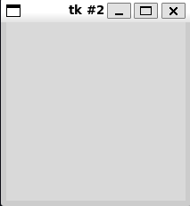
Create a
Labelby executing the following statementhello = Label(root, text="hello")User’s can’t interact with a
LabelBut does display text on a window
A program can change the text on a label
- e.g. in response to user input
Labelhas two parametersparent
- the object within which the label is displayed
- Here we use the root
- We can use multiple levels of nesting to create complex objects
text
- the actual text to display on the label
Should observe that after executing the above we don’t see the label text
We have created the label
We also need to specify how to display it
Two mechanisms
pack- packs elements together
- can supply hints e.g.
LEFTorTOPto control where the pack occurs
grid- lay elements out on a grid
- Does mean you need to plan the UI layout
gridmethod on graphical elements lets us specify how to place the object on a grid
Display the
Labelhelloon the window by using thegridmethod as shown belowhello.grid(row=0, column=0)- Tells the program to display the
hellolabel at the grid coordinate(0, 0)(top left corner) - Should now see the label displayed
- The window should shrink to the size of the label
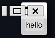
Tk Window with Label - Tells the program to display the
Add another label
Goodbyeby executing the followinggoodbye = Label(root, text="goodbye") goodbye.grid(row=1, column=0)- Display now has two labels
- Labels are left aligned
- The hello label is slightly offset more than the goodbye label
- We can use settings to fix this
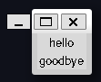
Tk Window with Two Labels - The next step is to allow the user to initiate actions in a program
- E.g. using a button
- When pressed a button can link to some behaviour to be executed
- How do we link this behaviour?
- We create a function encapsulating the behaviour
- The button is passed the function as a function reference
- When the button is pressed it calls the function
Define a function for your button. Execute the following commands
def been_clicked(): print("click")- Simple function
- When called it just prints
click
Create a button, and connect the
been_clickedfunction to it. Run the following statementsbtn = Button(root, text="Click me", command=been_clicked)- This creates a
Buttoncalledbtn - We specify it to be attached to the
rootwindow - We set the button text to
"Click me" - We then link the
been_clickedfunction via thecommandargument - Now we add the button to the display
btn.grid(row=2, column=0)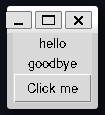
Tk Window with a Button Click the button a few times and you should see output like,
Each click results in a call to
been_clickedWe often refer to the functions connected to GUI elements as event handlers
- They handle the external events of the user
- This creates a
How do we modify a widget, such as changing the text? Work through the following
Display elements provide a
configmethodCan be used to change or configure their attributes
We can rename the
hellolabel as follows,hello.config(text="New Hello")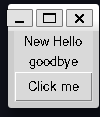
Updated hello label What if we want to read input from the user?
- We can use an
Entrywidget - The
Entrywidget reads a line of text from the user
- We can use an
Create an
Entrywidget by executing the following statementsent = Entry(root) ent.grid(row=3, column=0)The
Entrywidgetentis created at the bottom of the programThe initial text line is empty
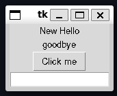
Tk Window with Entry widget However, we can type something in, say the classic
Hello, World!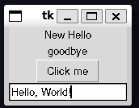
Entry with text entered The next question is how do we read the text into our program?
The
Entryobject supports agetmethodgetreturns the text of the elementRunning this on our
Entryobject we should see,print(ent.get())hello worldTry playing with this yourself
We’ve combined all these steps into one program
Code Analysis: Building a Graphical User Interface
Consider the following questions about graphical user interfaces
What happens if we change the size of the window on the desktop?
By default, we can resize a window
But the widgets themselves in the window do not resize
We can prevent the widget from being resized
root.resizable(width=False, height=False)resizablemethod controls if a window can be resizedYou can also have a window be resizable and have the components size and position change automatically
What happens if we close the window we created?
- We created our window in the interpreter
- Window disappears when closed on the desktop
- For a program
- Can define ways to get control when the user tries to close the program
- We created our window in the interpreter
Will the window look the same on different systems?
- No
- The general UI will look the same
- However, modern tk uses the windowing system of the host machine
- These can vary for different systems
What happens if an event handler function connected to a button takes a long time to complete?
- Function connect to the button runs
- Button is “stuck down” until the function finishes executing
- All other controls also not available
- Generally event handlers should be responsive
- Python supports threading or multiple threads of execution which can execute simultaneously
- Each thread can run a different program
- An event handler could spawn a separate thread to start a new program
- Threads will not be discussed more broadly in these notes
What happens if I put two items in the same cell in a grid?
- The most recent one will be drawn over the older one
- The new one blocks the old one
- This is generally a bad idea
Can we update the contents of elements on the screen from within an event handler?
- Yes
- This is how applications work
- They key takeaway here is that user interactions are events
- These events end up as calls to functions inside a program
- This notion of wiring widgets to actions is similar to the idea of wiring up an electronic device
- We design the UI then connect the UI components to event handlers
Create a Graphical Application
We’ll now demonstrate our first meaningful graphical program
Let’s create a simple adding program
- User provides two numbers
- Program outputs the result
The full code is given by adder.py
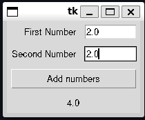
Adding Program User enters two numbers
Presses the result button
Result is then displayed below
We’ll start creating an application
- We’ll start with an
Adderclass to hold the application
class Adder: """GUI-based adding machine Call `display` to initiate the display Notes ----- Uses `Tkinter` as the GUI framework """ def display(self): """ Display the user interface Returns ------- None """- We’ll start with an
displayprovides the method for handling providing the UI- We’ll fill this in later
We’ll add some script code to get this to run as a main program
if __name__ == "__main__": app = Adder() app.display()This allows the code to loaded as a module (e.g. for
pydoc)Also executable as a main program
Now need to implement the adding machine
Lay out a Grid
- Let’s plan out the UI as a grid
- The below figure overlays the final grid
- We can see some of the components seem to span multiple columns
- We’ll look at how to implement this latter
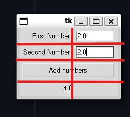
Adding Program Grid - Let’s look at what widgets we need
- 3 Labels (first number, second number, result)
- 2 Entries (first number, second number)
- 1 Button (Calculate result)
- Let’s build the first component
- Labelling the numbers
first_number_label = tkinter.Label(root, text="First Number") first_number_label.grid(sticky=tkinter.E, padx=5, pady=5, row=0, column=0) second_number_label = tkinter.Label(root, text="First Number") second_number_label.grid(sticky=tkinter.E, padx=5, pady=5, row=1, column=0) - These create and position the number labels
- They are positioned at the top of the widget (row zero and row one respectively)
- You can see we have
sticky,padxandpadyas extra positioning parameters to thegridcall
Use Sticky Formatting
- When using grid we often want to combine widgets of different sizes in the same columns
- Layout sizes a column to the largest element
- By default items are centre-aligned
- sticky lets you define a direction the widget should try to stick or prioritise
- Given by compass directions
tkinter.Estickies the label to the east or close to the adjacenttkinter.Entrywidget- To stretch a widget you can sticky an item in multiple directions
- This is because sticky directions can be added together
Use Padding
- Padding adds extra space around a component
- Useful to prevent a component being drawn right up against a boundary
- Padding can be defined for both the \(x\) and \(y\) directions
Span Grid Cells
We need a two column grid to but the number entry labels and entry boxes next to each other
We’d like the calculate result button and the displayed result to take up the whole row
We can merge columns by using the
columnspanargumentadd_button = tkinter.Button(root, text="Add numbers", command=do_add) add_button.grid(sticky=tkinter.E + tkinter.W, row=2, column=0, columnspan=2, padx=5, pady=5)do_addis a function we’ll define later to read the two numbers and perform the additioncolumnspan=2tells the program to drawadd_buttonas spanning two columnsBy making the button sticky in east and west it will be drawn across the entire row
Last steps are to add the
Entrywidgets and the resultLabelfirst_number_entry = tkinter.Entry(root, width=10) first_number_entry.grid(sticky=tkinter.E, padx=5, pady=5, row=0, column=0) second_number_entry = tkinter.Entry(root, width=10) second_number_entry.grid(sticky=tkinter.E, padx=5, pady=5, row=1, column=0) result_label = tkinter.Entry(root, text="Result") result_label.grid(sticky=tkinter.E + tkinter.W, padx=5, pady=5, row=3, column=0, columnspan=2)
Create an Event Handler Function
Now need to define our function connected to the result button
do_addWe can define this local to
displaysince no other part of the program needs itEvent handler needs to read the text from the two number entry widgets
Then needs to convert these to numbers
Then add them
Then update the results label with the result
The implementation is given below,
class Adder: ... def display(self): # create the screen elements def do_add(): # get first number first_number_text = first_number_entry.get() first_number = float(first_number_text) # get second number second_number_text = second_number_entry.get() second_number = float(second_number_text) # add them and update the display result = first_number + second_number result_label.config(text = str(result))
Code Analysis: Writing an Event Handler
Answer the following questions about an event handler
Why is the event handler defined inside the display function?
- The event handler function (
do_add) needs access to display elements defined indisplay - Functions defined inside a function have access to the variables of the enclosing scope
- Could define
do_addas part of theAdderclass- But would then have to maintain references to all the display elements outside of the display function
- The event handler function (
What happens if the user doesn’t type in a valid number before pressing the Add numbers button?
floatfails to convert the result- This raises an exception
- The user won’t see the exception directly
- We may see it in logging or debug output
- The display won’t update properly though because the
do_addmethod will abort - In the future well look at ways to provide the user with warning or error popups
Create a Main Loop
- In the first shell example, we could see everything just worked
- This was because the shell read input, processed it then waited for more input
- If we run our program as written, we’ll see a similar thing where the script just ends
- We can’t just use
sleepas before because this will freeze the program - The user should still be able to interact
- We can’t just use
- To keep the display active we need to set up a main loop
Code for making the program wait and then respond to user input
root.mainloop()
mainloopfetches events and sends it onto functions created to deal with events- When the close button is pressed the
mainloopends mainloopis typically the last statement- The program usually ends then too
Handle Errors in a Graphical User Interface
Our program works, but it’s simple
Doesn’t handle invalid input
If we enter strings the program will appear not work
- This is because
floatthrows an exception trying to convert strings
- This is because
We could add exception handling as we’ve done before
def do_add(): first_number_text = first_number_entry.get() try: first_number = float(first_number_text) except ValueError: result_label.config(text="Invalid first number") second_number_text = second_number_entry.get() try: second_number = float(second_number_text) except ValueError: result_label.config(text="Invalid second number")We could do a something identical for the second number
This has one problem
- If both the first and second number are invalid, only the first is flagged
We want to build a more complex error string that reports all the errors
def do_add(): error_message = "" first_number_text = first_number_entry.get() try: first_number = float(first_number_text) except ValueError: error_message = "Invalid first number\n" second_number_text = second_number_entry.get() try: second_number = float(second_number_text) except ValueError: error_message += "Invalid second number" if error_message != "": result_label.config(text=error_message) else: result = first_number + second_number result_label.config(text = str(result))We can use an empty error string to detect if we’ve encountered an error
This lets different error sections contribute to the overall output
We can further extend this by providing a visual indicator of where the error has occurred
For example, by setting the background red, and the text blue
first_number_entry.config(background="red", foreground="blue")In this case we also have to remember to reset the background, when the user corrects the input
The final implementation can be found in AddingMachineWithExceptions
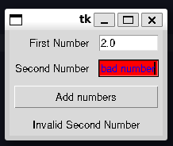
Adding Machine with Exceptions Display a Message Box
An alternative technique could be to use a message or dialog box
Forces the user to acknowledge the error
We can use Tkinter’s
messageboxfrom tkinter import messageboxmessageboxhas three levels for displaying messages (functions)showinfoshowwarningshowerror
Only difference is the icon
UI is locked until the user clears the message
All have the same function signature, see below
messagebox.showinfo("Rob Miles", "Rob Miles is awesome")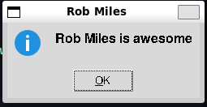
An example message box with an information notice We can add this to our Adder program
- Instead of setting the result with the error text, we display a message box
- To help the user we’ll also keep the background highlighting
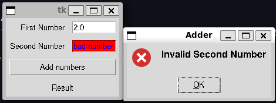
The Adder program with invalid input highlighting and an error message box
Make Something Happen: Fahrenheit to Centigrade and Back
In this challenge you will be provided with a half-finished program. Your goal is to complete the program. The program should allow the user to convert back and forth between fahrenheit and centigrade. The final program should look like the below,
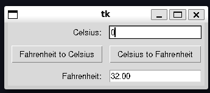
Currently it looks like
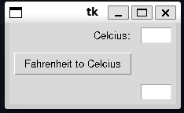
The starter code is
"""
Exercise 13.1 Fahrenheit to Celsius
Provides a graphical interface for converting between fahrenheit and centigrade
"""
import tkinter
class Converter:
"""
GUI-based Fahrenheit to Celsius converter (and vice-versa)
Call `display` to initiate the display
Notes
-----
Uses `Tkinter` as the GUI framework
"""
def display(self):
"""
display the user interface
Returns
-------
None
"""
root = tkinter.Tk()
cent_label = tkinter.Label(root, text="Celsius:")
cent_label.grid(row=0, column=0, padx=5, pady=5, stick=tkinter.E)
cent_entry = tkinter.Entry(root, width=5)
cent_entry.grid(row=0, column=1, padx=5, pady=5)
fah_entry = tkinter.Entry(root, width=5)
fah_entry.grid(row=2, column=1, padx=5, pady=5)
def fahrenheit_to_celsius():
"""
Convert from Fahrenheit to celsius and display the result
Returns
-------
None
"""
fah_string = fah_entry.get()
fah_float = float(fah_string)
result = (fah_float - 32) / 1.89
cent_entry.delete(0, tkinter.END) # remove old text
cent_entry.insert(0, str(result))
def celsius_to_fahrenheit():
"""
Convert from Celsius to Fahrenheit and display the result
Returns
-------
None
"""
cent_string = cent_entry.get()
cent_float = float(cent_string)
result = cent_float * 1.8 + 32
fahrenheit_to_celsius_button = tkinter.Button(root, text="Fahrenheit to Celsius", command=fahrenheit_to_celsius)
fahrenheit_to_celsius_button.grid(row=1, column=0, padx=5, pady=5)
root.mainloop()
if __name__ == "__main___":
app = Converter()
app.display()This program uses a new feature, we use an Entry element to get the user specified fahrenheit or celsius temperature. When we click the appropriate button we need to overwrite what was in the other Entry label.
Entry supports sophisticated text editing, but we only want to overwrite the text. We can’t just redefine the text like we would for a Label
First we use delete to remove the old text.
cent_entry.delete(0, tkinter.END) # remove the old textThe first argument is the index to delete from (inclusive), and the second is the index to delete to. tkinter.END is used to delete up to the end of the line
We can then add the new text using insert
cent_entry.insert(0, str(result))This has a slightly different syntax. We indicate the index we want to insert the string at, and then the string we want to insert
You can find the starter code here, and should have a go at yourself before reading the solution below
Let’s first tidy up the already implemented Fahrenheit to Celsius code. We want to add proper error handling code. We’ve already seen how to do this with the Message Box.
def fahrenheit_to_celsius():
"""
Convert from Fahrenheit to celsius and display the result
Returns
-------
None
"""
try:
fah_string = fah_entry.get()
fah_entry.config(background="white", foreground="black")
fah_float = float(fah_string)
except ValueError:
tkinter.messagebox.showerror(title="Temperature Converter", message="Fahrenheit must be a number")
fah_entry.config(background="red", foreground="blue")
return
result = (fah_float - 32) / 1.8
cent_entry.delete(0, tkinter.END) # remove old text
cent_entry.insert(0, "{0:.2f}".format(result))
cent_entry.config(background="white", foreground="black")- This should look pretty familiar, we use a
try...exceptblock to catch invalid input- On invalid input we display an error box
- We also set the background for the entry element to be red and the text to be blue
- This means we have to reset the entry element to the normal look after a successful read (in case it had been set as an error)
- Once we have validated all the input we can then update the text in the other entry box
- Here we have to be careful that if the user was previously typing here, then it might to have be set to an error highlight
- So here we also want to set it back to normal
- Lastly you’ll notice we’ve updated the string we pass to
insertto"{0:.2f}".format(result)- This allows means that the result will only be displayed to two decimal places
Next, we want to finish defining the reverse function for converting celsius to fahrenheit. This is pretty much identical to the previous function. Just swapping the roles of the entry boxes
def celsius_to_fahrenheit():
"""
Convert from celsius to Fahrenheit and display the result
Returns
-------
None
"""
try:
cent_string = cent_entry.get()
cent_entry.config(background="white", foreground="black")
cent_float = float(cent_string)
except ValueError:
tkinter.messagebox.showerror(title="Temperature Converter", message="Celsius must be a number")
cent_entry.config(background="red", foreground="blue")
return
result = cent_float * 1.8 + 32
fah_entry.delete(0, tkinter.END)
fah_entry.insert(0, "{0:.2f}".format(result))
fah_entry.config(background="white", foreground="black")We then need to add the button to connect to this function
celsius_to_fahrenheit_button = tkinter.Button(root, text="Celsius to Fahrenheit", command=celsius_to_fahrenheit)
celsius_to_fahrenheit_button.grid(row=1, column=1, padx=5, pady=5)
root.mainloop()Of course the last thing to do is add the Fahrenheit label and then perform some tidying up. Namely we want the Entry boxes to stretch to fill the whole column (so we use tkinter.E + tkinter.W in the stick parameter)
def display(self):
"""
display the user interface
Returns
-------
None
"""
root = tkinter.Tk()
cent_label = tkinter.Label(root, text="Celsius:")
cent_label.grid(row=0, column=0, padx=5, pady=5, stick=tkinter.E)
fah_label = tkinter.Label(root, text="Fahrenheit:")
fah_label.grid(row=2, column=0, padx=5, pady=5, stick=tkinter.E)
cent_entry = tkinter.Entry(root, width=5)
cent_entry.grid(row=0, column=1, padx=5, pady=5, stick=tkinter.E + tkinter.W)
fah_entry = tkinter.Entry(root, width=5)
fah_entry.grid(row=2, column=1, padx=5, pady=5, stick=tkinter.E + tkinter.W)The final working implementation can be found in FahrenheitToCelsius.py
Draw on a Canvas
- GUI’s typically work by recognising events or interactions
- For example, we could recognise when a user has clicked on a screen to draw something
- Let’s create a basic drawing program
Make Something Happen: Investigate Events and Drawing
Investigate events in Tkinter by working through the following activity. Start by opening the python interpreter
Import Tkinter
import tkinterCreate a window on the screen
root = tkinter.Tk()Create a
CanvasA
Canvasis a display component that acts as a container for other display elementsElements can be drawn and positioned on a canvas
When creating the canvas we need to specify the size
Enter the following to create a canvas
c = Canvas(root, width=500, height=500)place the canvas on the display, by entering the following
c.grid(row=0, column=0)
Add functionality to the canvas
The canvas currently just appears as a square
We need to attach functionality to the canvas
Similar to how we attach a function to a button
Start by defining our action function
Define the function below
def mouse_move(event): print(event.x, event.y)Above function receives a single argument (
event)eventhas two attributes,xandy- These are the positions of the mouse when the event is triggered
This function simply prints out the position of the mouse when the event is triggered
Now we need to connect the event to this function
- This process is called binding
display objects contain a
bindmethod used to bind events triggered on them to a functionEnter the following to bind the
<B1-motion>event on the canvas to your functionc.bind("<B1-Motion>", mouse_move)<B1-Motion>corresponds to mouse movement with theB1button held down (left-button typically)bindreturns a unique string to identify the binding- This string can be used to track and recover a binding later
- e.g. If we wanted to disable it
- String’s are typically machine specific
Try out the new functionality
- Click and drag your mouse on the canvas
- You should see a stream of coordinates in the output
- In graphics typically the top left corner is
(0, 0)- Indices increase down the screen and to the right
Convert the canvas to a drawing program
We want our canvas to support drawing something!
Canvasprovides a methodcreate_rectangleto draw a rectangle on a screenEnter the following to draw a rectangle
c.create_rectangle(100, 100, 300, 200, outline="blue", fill="blue")create_rectangletakes four arguments, corresponding to the(x, y)coordinates of the top left and the bottom right corner respectivelyoutlinelets us optionally set the outline colour of the rectangle (default is black)fillsets the fill in colour of the block (default black)create_rectanglereturns an integerThis is an id for the drawn rectangle
We can use this to manipulate the rectangle
Delete the rectangle
c.delete(1)The ability to manipulate the objects on a canvas is very powerful
Redefine a new function for the mouse press event
def mouse_move_draw(event): c.create_rectangle(event.x - 5, event.y -5, event.x + 5, event.y + 5, fill="red", outline="red")The above draws a \(10 \times 10\) pixel rectangle centred around the mouse click location
Bind this new function to the canvas
c.bind("<B1-Motion>", mouse_move_draw)Now attempt to draw on the canvas, you should see something like below
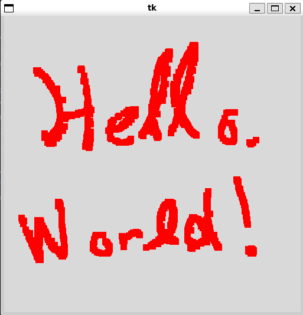
The basic drawing canvas
The final result can be found in Canvas.py
{kind=link}
Tkinter Events
- Events are powerful and flexible
- Consider the event tag from before
"<B1-Motion>"It consists of two parts
- The first part is the modifier (
B1)- Condition required for event to generate
- Here the condition is that the primary mouse button is clicked
- The second part is the detail
- Thing that produces the event (here moving the mouse)
- The first part is the modifier (
We could for example use the event
"<Motion>"- This produces events for every mouse move
- Below is a table of common and useful events and modifiers
| Modifier | Action | Detail | Action |
|---|---|---|---|
| Control | Control key pressed | Motion | Mouse moved |
| Shift | Shifty key pressed | ButtonPress | Mouse button pressed |
| B1-B4 | corresponding mouse button | ButtonRelease | Mouse button released |
| KeyPress | Key pressed | ||
| KeyRelease | Key released | ||
| MouseWheel | Mouse wheel moved |
- Different actions may create different event information
- Events delivered when a key is pressed identify the key
- Events delivered by the mouse contain its coordinates
- Multiple modifiers can create complex events with multiple modifiers
Create a Drawing Program
Let’s create a more sophisticated version of our drawing program
- User can draw with a mouse
- Change the drawing colour with the keyboard
- clear the canvas
"""
Example 13.6 Drawing Program
A simple drawing program where the user can
1. Draw
2. Change brush colour
3. Clear the canvas
"""
import tkinter
class Drawing:
"""
GUI element for a drawing program
Notes
-----
Uses `tkinter` for the GUI framework
"""
def display(self):
"""
Display the Drawing Program
Returns
-------
None
"""
root = tkinter.Tk()
canvas = tkinter.Canvas(root, width=500, height=500)
canvas.grid(row=0, column=0)
draw_colour = "red"
def mouse_move(event):
"""
Draw a 10 by 10 pixel rectangle centred on the mouse
Parameters
----------
event
the triggering event
Returns
-------
None
"""
canvas.create_rectangle(
event.x - 5,
event.y - 5,
event.x + 5,
event.y + 5,
fill=draw_colour,
outline=draw_colour,
)
canvas.bind("<B1-Motion>", mouse_move)
def key_press(event):
"""
Change the drawing program state in response to a key press
Parameters
----------
event
key press that triggered the function
Returns
-------
None
"""
nonlocal draw_colour
ch = event.char.upper()
if ch == "C":
canvas.delete("all")
elif ch == "R":
draw_colour = "red"
elif ch == "G":
draw_colour = "green"
elif ch == "B":
draw_colour = "blue"
canvas.bind("<KeyPress>", key_press)
canvas.focus_set()
root.mainloop()
if __name__ == "__main__":
app = Drawing()
app.display()The output should look something like this,
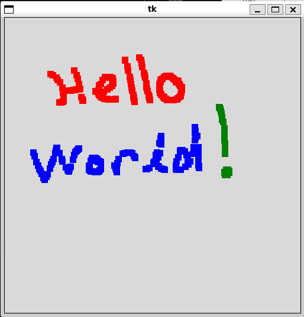
and can be found in DrawingProgram.py
Code Analysis: Drawing on a Canvas
To understand the code above, work through the following questions
What is the
draw_colourvariable used for?draw_colourholds the current draw colourMany colours are recognised by name
There are other methods for specifying colours too, such as by hexcode
draw_colour = "#FFFF00"- The hexcode is three two-digit hex values
- Correspond to the amount of red, green and blue respectively
- The above corresponds to yellow
The Tcl wiki maintains a page with the colour names
The program starts with
draw_colourcorresponding to red, and uses the keysR,G,Bto switch colours
How do you clear the canvas?
- We can delete specific items if we keep track of the ID
deletecan accept"all"as its argument- In this case all elements are deleted
- This effectively clears the canvas
- In our program this is assigned to the
Ckey
In the
key_pressfunction, you’ve created anonlocalvariable calleddraw_colour. What does this mean?def key_press(event): nonlocal draw_colourkey_pressneeds to be able to change the value ofdraw_colourdraw_colouris declared in the outerdisplayfunction scopedraw_colouris therefore not a global variable so we can’t useglobalto connect the function to the variablenonlocalacts similar but means the variable exists in the enclosing scope
What does the call of
focus_setdo?- By default python doesn’t know what application a key press should be sent to
- Or which component of an application
focus_settells python that this component should receive the keyboard events- This is independent of which window is actually focused (i.e. currently being looked at) by the user
- By default python doesn’t know what application a key press should be sent to
Make Something Happen: Make the Drawing Program Draw Ovals
The Canvas object provides a method called create_oval, which can be used to draw ovals. It has a different set of arguments from the create_rectangle method. Make a version of the drawing program that draws ovals. You could even allow the artist to swap between brushes by pressing S for square brush and O for an oval brush
Let’s first implement the oval drawing mechanics. From the tkinter website, we can see that create_oval has a similar function signature to create_rectangle, but there is different semantic meaning. The oval is drawn inscribed in a rectangle defined by the upper left corner (the first two arguments) and the lower right corner (bottom two arguments).
So we can define a function to draw an oval in response to an event as follows,
def mouse_move_oval(event):
"""
Draw an oval inscribed in an 10 x 10 pixel rectangle centred on
the mouse
Parameters
----------
event
the triggering event
"""
canvas.create_oval(
event.x - size,
event.y - size,
event.x + size,
event.y + size,
fill=draw_colour,
outline=draw_colour,
)Now we need to add the functionality to switch between the two brushes. By default our program binds the <B1-Motion> event to drawing a square. We need to make this binding change. We’ll add additional keypress events to the key_press function S and O to switch the brush. Each of these events will have to rebind the appropriate function to the <B1-Motion> event. To help the user we’ll add a text label below the canvas that indicates the current brush. For symmetry we’ll add a second label below this one that indicates the current colour. So we then need to update the key_press function to properly update these labels.
The final key_press function then looks like,
def key_press(event):
"""
Change the drawing program state in response to a key press
Parameters
----------
event
key press that triggered the function
Returns
-------
None
"""
nonlocal draw_colour
nonlocal size
ch = event.char.upper()
if ch == "C":
canvas.delete("all")
elif ch == "R":
draw_colour = "red"
colour_label.config(text="Colour: {0}".format(draw_colour))
elif ch == "G":
draw_colour = "green"
colour_label.config(text="Colour: {0}".format(draw_colour))
elif ch == "B":
draw_colour = "blue"
colour_label.config(text="Colour: {0}".format(draw_colour))
elif ch == "S":
canvas.bind("<B1-Motion>", mouse_move_square)
brush_label.config(text="Brush: square")
elif ch == "O":
canvas.bind("<B1-Motion>", mouse_move_oval)
brush_label.config(text="Brush: oval")
elif ch == "+":
size = min(size + 5, 50)
size_label.config(text="Size: {0}".format(size))
elif ch == "-":
size = max(size - 5, 5)
size_label.config(text="Size: {0}".format(size))
elif ch == "H":
tkinter.messagebox.showinfo(
title="Simple Canvas",
message="""Controls:
C - clear canvas
R - change colour to red
B - change colour to blue
G - change colour to green
S - change brush to square brush
O - change brush to oval brush
+ - increase brush size
- - decrease brush size
Right click to erase""",
)You’ll notice that there are three extra bound events that have not been discussed. The first two are the + and - keys which we bind the increasing and decreasing the brush size respectively. Our original drawing code always draw the box as a \(10 \times 10\) box around the triggering event. We’ll now let the user control that. We make size a variable, and the user can use + to increase the brush size in increments of \(5\) up to \(50\), and decrease the size using - down to \(5\). This size takes the place of the hardcoded event.x + 5 statements in mouse_move_oval.
The next addition you should notice is the H key. This simply uses messagebox to display a dialog to the user listing out all the controls.
The last functionalty we want to implement is erasing. We want the user to be able to erase over previously drawn elements using the right mouse button. This corresponds to the <B3-Motion> event. Now we could try and right some code that tracks all the drawn elements and tries to locate which element is being dragged over and delete it, but an easy work around is to simply paint over the top with a new rectange that uses the background colour. So in this case, from the tkinter docs we can see that we can set the Canvas background colour to white using bg="white" in the Canvas constructor. We can then define our erase function as,
def erase(event) -> None:
"""
Erase the canvas
Parameters
----------
event
triggering event
Notes
-----
Erase is implemented by drawing a white rectangle centred on the mouse
"""
canvas.create_rectangle(
event.x - size,
event.y - size,
event.x + size,
event.y + size,
fill="white",
outline="white",
)We then simply bind this to the the <B3-Motion> event and we’ve got our erase. This fairly straightforward set of steps gives us a fairly complete and good looking little drawing program. You can see the full code in DrawingProgram.py. An example of the program looks like below,
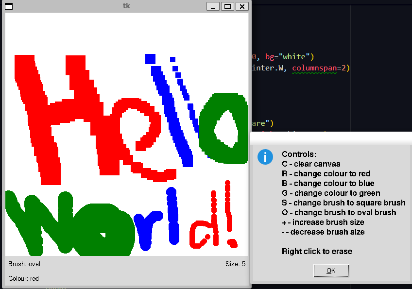
Enter Multiline Text
Entryonly supports a single line of text- Powerful, but not sophisticated enough for all tasks, e.g. a text editor
Textsupports pages of text- Similar to
Entry - Some differences
- Similar to
Make Something Happen: Investigate the Text Object
Investigate the Text object using the python interpreter. Work through the following steps
Import tkinter
import tkinterCreate a Tkinter window
root = tkinter.Tk()Create a
Textobjectt = tkinter.Text(width=80, height=10)Creates a
Textobject, assigned totwidthandheightcorrespond to characters (width) and lines (height) not pixelsposition the object on the window
t.grid(row=0, column=0)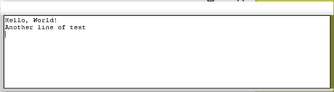
The TextwidgetTextgives a lot of control over editing the contentTextlet’s us extract it’s contents usinggetlikeEntry- But has a more sophisticated functions signature
Refer to characters by their row and column positions
Demonstrate the use of
getto extract text from theTextwidgett.get("1.0", tkinter.END)Hello, World!\nAnother line of text\nThis returns all of the text starting at row \(1\), column \(0\) and through the
tkinter.ENDof theText.If you want to get a specific slice of text, you can instead pass another string of the form
"row.column", e.g.To slice the second row, we write
t.get("2.0", "3.0")Another line of text\n
Demonstrate the use of the
deletemethod to remove textdeleteremoves text from aTextwidgetHas an identical signature to get, e.g.
t.delete("1.0", tkinter.END)deletes all text
Demonstrate the use of the
insertmethod to add textWe can add text by defining the start position
Then supply the string we want to insert, e.g.
t.insert("1.0", "New line 1\nNew line 2")This inserts text into the
Textbox at the start,\nresults in splitting the lines
Group Display Elements in Frames
gridhelps us define how we want to layout a complete window- Often we want to lay out subcomponents on a bigger component first
- That component is then embedded into the window
Frameis an object for acting as a root for a set of elements- Can be used to define how objects are displayed within it
- The goal will be to create a graphical version of our fashion shop program
- We can use a
Frameto define a layout for editing aStockItem - The
Frameobject can then be included in higher level graphical objectsFrameacts very similar to theTkobject for the main windowWe can use it in places that need a root window rather than the
Tkobject as belowframe = tkinter.Frame(root) stock_ref_label = tkinter.Label(frame, text="Stock ref:") stock_ref_label.grid(sticky=tkinter.E, row=0, column=0, padx=5, pady=5)stock_ref_labelis now part of theframeobject- Positioned in the top left corner of the frame
- This frame component can then be reused elsewhere
Note that the
stock_ref_labeland other components of the frame won’t show up until the frame itself is attached to some other frame or window
Create an Editable StockItem Using a GUI
Now let’s start creating a graphical version of our Fashion Shop Program
First goal is to create an editable
StockItemWe need the GUI presentation of it to,
- Clear the editor display
- Put a
StockItemon display for editing - Load a
StockItemfrom the display after editing
This object will be called
StockItemEditorLet’s start by stubbinng out the class
"""
Example 13.8 Stock Item Editor
Implements a graphical editor object for editing `StockItem` objects
"""
class StockItemEditor:
"""
Graphical Editor for a StockItem
Notes
-----
Implemented as a `Tkinter` Frame
"""
def __init__(self, root):
"""
Create a new `StockItemEditor`
Parameters
----------
root
Tkinter root frame for the editor
"""
pass
def clear_editor(self):
"""
Clears the editor window
Returns
-------
None
"""
pass
def load_into_editor(self, item):
"""
Load a `StockItem` into the edit display
Parameters
----------
item : StockItem
stock reference to be loaded
"""
pass
def get_from_editor(self, item):
"""
Get an updated `StockItem` from the editor
Parameters
----------
item : StockItem
stock reference to update
Raises
------
ValueError
raised if the price entry cannot be converted to a number
"""
passImplement the methods one by one
Start with
__init__Needs to
- Create display objects
- Add them to the frame
Editor exists at the start of the program
- Item’s are loaded into the editor
An alteranative design might be to load an editor when we bring up an item
def __init__(self, root): """ Create a new `StockItemEditor` Parameters ---------- root Tkinter root frame for the editor """ self.frame = tkinter.Frame(root) stock_ref_label = tkinter.Label(self.frame, text="Stock ref:") stock_ref_label.grid(sticky=tkinter.E, row=0, column=0, padx=5, pady=5) self._stock_ref_entry = tkinter.Entry(self.frame, width=30) self._stock_ref_entry.grid(sticky=tkinter.W, row=0, column=1, padx=5, pady=5) price_label = tkinter.Label(self.frame, text="Price:") price_label.grid(sticky=tkinter.E, row=1, column=0, padx=5, pady=5) self._price_entry = tkinter.Entry(self.frame, width=30) self._price_entry.grid(sticky=tkinter.W, row=1, column=1, padx=5, pady=5) self._stock_level_label = tkinter.Label(self.frame, text="Stock level: 0") self._stock_level_label.grid(row=2, column=0, columnspan=2, padx=5, pady=5) tags_label = tkinter.Label(self.frame, text="Tags:") tags_label.grid(sticky=tkinter.E + tkinter.N, row=3, column=0, padx=5, pady=5) self._tags_text = tkinter.Text(self.frame, width=50, height=5) self._tags_text.grid(row=3, column=1, padx=5, pady=5)The
__init__creates a bunch of elements, namely,- A label, entry pair for the stock item reference number,
- A label, entry pair for the stock item price
- A label for the current stock level
- A label, text pair for the stock item tags
We can then create and run our program with this element,
root = tkinter.Tk() stock_frame = StockItemEditor(root) stock_frame.frame.grid(row=0, column=0) root.mainloop()
Code Analysis: Creating a StockItemEditor
Answer the following questions about how StockItemEditor __init__ method
Why do only some of the display elements have a
selfelement in front of them- We only need to keep a reference to display elements we later want to interact with
- e.g. the various entry boxes and the stock level label
- The former we’ll want to extract and/or update the text from and the later we want to update the text
- Other display elements like static labels we don’t need to change, so no need to keep the reference
- We only need to keep a reference to display elements we later want to interact with
What is the frame attribute of the
StockItemEditorclass used for?The frame contains the objects that make up the editing display
Program creating the display needs to use the frame to position the entire component in the larger display
frameis simply an attribute to hold theFrameobject referencee.g. when we actually position the frame,
stock_frame.frame.grid(row=0, column=0)
Next, the
clear_editormethod- Two use cases,
- Loading a new element (clear any previous element first)
- When finished editing an element
def clear_editor(self): """ Clears the editor window Returns ------- None """ self._stock_ref_entry.delete(0, tkinter.END) self._price_entry.delete(0, tkinter.END) self._tags_text.delete("0.0", tkinter.END) self._stock_level_label.config(text="Stock level: 0")- Straightforward, justt clear all the text and set the stock level label to zero
Next we implement
load_into_editorwhich loads aStockItemNeed to copy the values from the supplied
StockIteminto the editordef load_into_editor(self, item): """ Load a `StockItem` into the edit display Parameters ---------- item : StockItem stock reference to be loaded """ self.clear_editor() self._stock_ref_entry.insert(0, item.stock_ref) self._price_entry.insert(0, str(item.price)) self._stock_level_label.config(text="Stock level {0}".format(item.stock_level)) self._tags_text.insert("0.0", item.text_tags)We call the method and pass the
StockItemThe editor then reads the values from the item
Inserts these into the appropriate text boxes
We can then use it as below,
item = StockItem.StockItem( "D001", price=120, tags="dress,colour:red,loc:shop window,pattern:swirly,size:12,evening,long", ) item.add_stock(5) stock_frame.load_into_editor(item)
Code Analysis: The load_into_editor Method
Work through the following questions about the load_into_editor method
What is the purpose of this method?
- Used after the user has selected a
StockItemto edit - Needs to load and display the values of the item for the user to then modify
- Compared to our text-based interface which prompted the user to edit each attribute in turn for
Contactobjects
- Compared to our text-based interface which prompted the user to edit each attribute in turn for
- Used after the user has selected a
Why are some of the items converted to a string before editing?
- Attributes internally are not strictly held as strings
- E.g. the
priceis a number and tags are aset EntryandTextexpect strings though, so we have to convert back and forth
What is the
text_tagsattribute of the aStockItemGood spot!
This is a small addition make to the
StockItemto simply conversion of a tags set to a string and backAllows the user to easily supply or receive a set of tags as a string of comma-seperated values
@property def text_tags(self): """ text_tags : str item tags as a comma separated string """ tag_list = list(self.tags) tag_list.sort() return ",".join(tag_list) @text_tags.setter def text_tags(self, tag_string): self.tags = set(map(str.strip, str.split(str.lower(tag_string), sep=",")))We’ve modified the
StockItemimplementation to simply support thisAn alternative would be to provide a wrapper or adaptor
Last method, is the reverse of the previous. To fetch a
StockItemfrom the editordef get_from_editor(self, item): """ Get an updated `StockItem` from the editor Parameters ---------- item : StockItem stock reference to update Raises ------ ValueError raised if the price entry cannot be converted to a number """ item.set_price(self._price_entry.get()) item.stock_ref = self._stock_ref_entry.get() item.text_tags = self._tags_text.get("1.0", tkinter.END)- We now want to link this to a button that the user will press
def save_edit(): stock_frame.get_from_editor(item) stock_frame.clear_editor() save_button = tkinter.Button(root, text="Save", command=save_edit) save_button.grid(row=1, column=0)We can see this updates the item, then clears the editor
You might notice a new function on the
StockItem,set_priceThis simply validates that a given price is a number and then updates the price
def set_price(self, new_price): """ Set a new price on the stock item Parameters ---------- new_price : int | float new price of the item Raises ------ ValueError Raised if the price is outside of the valid range ValueError Raised if the price is not a number """ if StockItem.show_instrumentation: print("** StockItem set_price called") try: new_price = int(new_price) except ValueError: new_price = float(new_price) if new_price < StockItem.min_price or new_price > StockItem.max_price: raise ValueError("Price out of range") self.__price = new_price
Code Analysis: The get_from_editor Method
Answer the following questions about get_from_editor
What is the purpose of this method?
- Takes the edited
StockItemvalues and puts them back into aStockItem - Equivalent of saving text in a text editor, your changes are written back to the original file
- Takes the edited
Can this method fail?
- Yes
- Invalid prices will cause the
set_pricemethod to raise aValueError- This occurs if the value is not a number or if it’s outside the valid range
- The caller is responsible for handling the exception
- We can write a simple script to check that the
StockItemEditorwidget works as expected
if __name__ == "__main__":
item = StockItem.StockItem(
"D001",
price=120,
tags="dress,colour:red,loc:shop window,pattern:swirly,size:12,evening,long",
)
item.add_stock(5)
root = tkinter.Tk()
stock_frame = StockItemEditor(root)
stock_frame.frame.grid(row=0, column=0)
stock_frame.load_into_editor(item)
def save_edit():
stock_frame.get_from_editor(item)
stock_frame.clear_editor()
save_button = tkinter.Button(root, text="Save", command=save_edit)
save_button.grid(row=1, column=0)
root.mainloop()For simplicity this has been written in the same file as the StockItemEditor
The final widget should look something like below
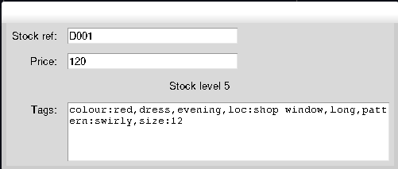
The final StockItemEditorwidgetYou can also see the updated
StockItem
Code Analysis: Editing Stock Items
Would it not make sense to put the editing behaviour inside the StockItem class?
You can probably make an argument one way or another. The argument in favour might be that all the functionality of a StockItem should be in the StockItem and that by keeping the editing behaviour on the object we can reduce coupling to another edit object that might need to read the internals of the StockItem class.
The argument against might be that the StockItem is supposed to represent a specific StockItem and its associated data. It would be an additional responsibility for it to also be responsible for editing itself, as that is effectively taking responsibility for creating StockItem objects.
For this program we decide to go with the second approach, StockItem simply acts as a datastore, and StockItemEditor implements the logic for editing a StockItem
Create a Listbox Selector
- We can now load and edit our stock items
- The thing we need is a way for the user to select a stock item
- We can’t just put a simple button in because the number of stock items is dynamic
- One approach would be to use an
Entrywidget to have the user type in the reference they want to edit- This has the difficulty that the user has to know the stock reference beforehand
- A more useful approach might to be have all the stock references displayed in a list that we can select from
Listboxis a widget that lets us do this
Make Something Happen: Investigating the Listbox Object
Start by investigating the Listbox through the python interpreter. Work through the following steps
Load tkinter and create a window
import tkinter root = tkinter.Tk()Create a
Listboxand display itlb = tkinter.Listbox(root) lb.grid(row=0, column=0)- This creates a
Listboxassigns it to the variablelb - Then adds
lbto the window - Screen should now have an empty white list box
- This creates a
Add some items to the box
We can add items using the
insertmethodlb.insert(0, "hello")First argument is the index to insert the item
Second argument is the text to insert
Add some more items,
lb.insert(1, "goodbye") lb.insert(0, "top line") lb.insert(tkinter.END, "bottom line")The final listbox should look like below,
We can see that
insertdoesn’t overwrite elements, if we insert before another element, everything is shifted downWe can use
tkinter.ENDto append something to the end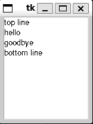
The Listboxafter adding some items to itIn our program, we’ll populate the
Listboxwith the stock references of our stock items
Define a binding to select items from the
ListboxNow we need to be able to select items in the box
This is an event to bind against
Start by defining the function to bind
def on_select(event): """ Get's the text associated with a selected Listbox item """ lb = event.widget index = int(lb.curselection()[0]) print(lb.get(index))Runs when the user clicks on a
ListboxWe first retrieve the widget that triggered the event with
event.widget()- In this case it is the listbox
We then get the currently selected index in the list box
curselectionreturns a tuple of selected elements- Since we might have multiple selected
- We’re not using this, so we only want the first one
Then pass this index to the
getmethod of the list box- The list box
getreturns the text associated with a supplied index
- The list box
Now we need to bind this to the listbox
The event we want is
"<<ListboxSelect>>"Enter the following
lb.bind("<<ListboxSelect>>", on_select)
- A script version is available in Listbox.py
Create a StockItem Selector
Now let’s create a
StockItemSelector component using aListboxOur
StockItemSelectorneeds to,- Accept
StockItemobjects to define the selection list - Tell the user when an item has been selected from the list
- Accept
First step is straightforward
Second is more complicated
- How do we make an object tell us something?
- i.e. the reverse of binding where we do something when something else tells us something
- This is called message passing, one part of a program sends a message to another
- Here
StockItemSelectorwants to send a message to tell listeners that aStockItemhas been selected
Implementing message passing can be done using references
- Sender takes in a reference to the receiver object
- Message transmission is then implemented as calling a method on the receiver object
- The receiver object is defined in the initialiser
class StockItemSelector:
"""
Widget providing a list selection for StockItem objects
"""
def __init__(self, root, receiver):
"""
Create a new `StockItemSelector`
Parameters
----------
root
The parent frame or window to attach this component to
receiver
Object to send a message to when the selection changes
"""
self.receiver = receiver
self.frame = tkinter.Frame()
self.listbox = tkinter.Listbox(self.frame)
self.listbox.grid(row=0, column=0)
def on_select(event):
"""
Find the selected text in the Listbox and send it to the
receiving object
Bound to the `ListboxSelect` event
Parameters
----------
event
event that triggered the function
Returns
-------
None
"""
lb = event.widget
index = int(lb.curselection()[0])
receiver.got_selection(lb.get(index))
self.listbox.bind("<<ListboxSelect>>", on_select)Code Analysis: Selecting Stock Items
Work through the following questions about the code
What is the following method doing?
- Creates an instance of the
StockItemSelector - Designed to display a
ListboxofStockItemobjects - We want to inform a user-specified receiver object when the selection changes
__init__takes the root window, and the object that should be informed (the receiver)__init__stores the receiver, creates theListboxand properly configures an event handler
- Creates an instance of the
What happens if the receiver doesn’t have a
got_selectionmethod?StockItemSelectorcalls thegot_selectionmethod on the receiving object when the selection changesIf there is no such method an exception will be thrown
We can test if the function exists using,
assert hasattr(receiver, "got_selection")hasattraccepts two arguments- The object to check
- A string identifying the attribute
hasattrreturnsTrueif the attribute exists on the object, elseFalseWe can use this to raise an exception in the
__init__if the supplied object doesn’t have the appropriate methodThis is the appropriate place to put this check (rather than making it implicit at the point we call the function)
The second method to implement is the one that actually populates the
Listbox- Should accept a list of
StockItemobjects and add their references to the display
def populate_listbox(self, items): """ Populate the Listbox with a list of StockItem's Parameters ---------- items : list[StockItem] a list of stock items to add to the selection Returns ------- None """ self.listbox.delete(0, tkinter.END) for item in items: self.listbox.insert(tkinter.END, item.stock_ref)- Should accept a list of
This method is pretty straightforward
First clear any existing elements in the
ListboxThen iterate over the list inserting the stock references for each item
Finally we’ll add a simple demo script in StockItemSelector.py
if __name__ == "__main__": class MessageReceiver: def got_selection(self, stock_ref): print("stock item selected:", stock_ref) stock_list = [] for i in range(1, 100): stock_ref = "D{0}".format(i) item = StockItem.StockItem( stock_ref, 120 + (i * 10), "dress, colour:red, loc:shop window,pattern:swirly, size:12, evening, long", ) stock_list.append(item) receiver = MessageReceiver() root = tkinter.Tk() stock_selector = StockItemSelector(root, receiver) stock_selector.populate_listbox(stock_list) stock_selector.frame.grid(row=0, column=0) root.mainloop()Which after running should look like,
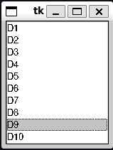
Demonstration of the StockItemSelector
An Application with a Graphical User Interface
Our goal now is to put all of the pieces of the previous section together to create a full graphical version of the fashion shop program
The user should be able to,
- Select Stock Items
- Add or sell stock of a selected item
- Edit an item
- Create a new item
- Search for an item by tags
The final version of the program should look something like this,
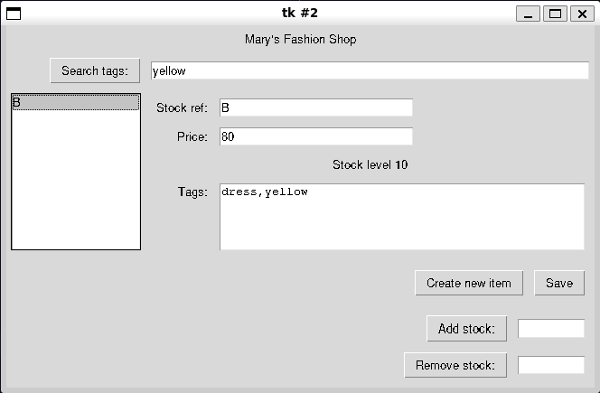
The final implementation of a Graphical Fashion Shop Program
Setting up the File Structure and the Basic Graphical User Interface
Let’s start by getting our basic set-up working and then add more functionality on top
We want to make our program follow the interface of the shell-based fashion shop program, so that we can seamlessly switch between them
We’ll start with the final implementation found in Chapter 12
- We’ll start by modifying the folder structure, now rather than just having a
UIpackage, we’ll split that into aGUIand aShellUIsubpackage- We move the shell implementation into the
ShellUIsubpackage and update / add__init__.pyfiles as required - We create a new
GUIsubpackage which we’ll use to create our gui package
- We move the shell implementation into the
- Let’s start by copying in the
StockItemEditorandStockItemSelectorcomponents from the previous section - We can remove the demo code from these
- We’ll start by modifying the folder structure, now rather than just having a
The final directory structure should look like,
. ├── Data │ ├── FashionShop.py │ ├── StockItem.py │ └── __init__.py ├── Docs │ ├── Data.FashionShop.html │ ├── Data.StockItem.html │ ├── Data.html │ ├── FashionShopGraphicalUI.html │ ├── FashionShopShellUI.html │ ├── RunTests.html │ ├── UI.GUI.FashionShopGraphicalApplication.html │ ├── UI.GUI.StockItemEditor.html │ ├── UI.GUI.StockItemSelector.html │ ├── UI.GUI.StockItemStockAdjuster.html │ ├── UI.GUI.html │ ├── UI.ShellUI.BTCInput.html │ ├── UI.ShellUI.FashionShopApplication.html │ ├── UI.ShellUI.html │ └── UI.html ├── FashionShopGraphicalUI.py ├── FashionShopShellUI.py ├── RunTests.py ├── UI │ ├── GUI │ │ ├── FashionShopGraphicalApplication.py │ │ ├── StockItemEditor.py │ │ ├── StockItemSelector.py │ │ ├── StockItemStockAdjuster.py │ │ └── __init__.py │ ├── ShellUI │ │ ├── BTCInput.py │ │ ├── FashionShopApplication.py │ │ └── __init__.py │ └── __init__.py └── fashionshop.pickleNow let’s create a
FashionShopGraphicalApplicationthis will act like the oldFashionShopApplicationbut support a GUIThe start of the class, is below
- We provide a simple static method for converting between a tag set and the text based tag implementation
- Then define a basic
__init__ - To avoid cluttering the
__init__we define a methodself._setup_UIthat contains the user interface setup code
The rest of the class should look familiar
- We attempt to load the database from a file
- This time if we fail, we present the user with a Warning message box
We also then set the currently selected item, and the current search tags to be empty
class FashionShopGraphicalApplication:
"""
Provides a graphical interface for Fashion Shop inventory management
"""
@staticmethod
def tag_set_from_text(tag_text):
"""
Create a set of tags from a comma-separated list
Tags are normalised as lowercase with leading and
trailing whitespace stripped
Parameters
----------
tag_text: str
comma-separated list of tags
Returns
-------
set
set containing unique tags. Tags are lowercase with
no leading or trailing whitespace
"""
if tag_text == "":
return set()
tags = set(map(str.strip, str.split(str.lower(tag_text), sep=",")))
return tags
def __init__(self, filename, storage_class):
"""
Creates a new `FashionShopApplication`
Attempts to load a `FashionShop` from the provided file. Otherwise
an empty instance is created
Parameters
----------
filename : str
path to a file containing pickled `FashionShop` data
storage_class : Data Manager
class that supports the Fashion Shop Data Management API
See Also
--------
FashionShop : Main class for handling inventory management
"""
# load the storage class
FashionShopGraphicalApplication.__filename = filename
try:
self.__shop = storage_class.load(filename)
except: # noqa: E722
tkinter.messagebox.showwarning(
title="Mary's Fashion Shop",
message="Failed to load Fashion Shop\nCreating an empty Fashion Shop",
)
self.__shop = storage_class()
# configure the starting state
self._current_item = None
self._search_tags = ""
# configure the user interface
self._setup_UI()Adding Selection and Editing
Now we can start setting up our
_setup_UImethodIt looks like below,
def _setup_UI(self): """ Setup's and initialises the GUI elements Returns ------- None """ self._program_title = "Mary's Fashion Shop" self._root = tkinter.Tk() title_label = tkinter.Label(self._root, text=self._program_title) title_label.grid( sticky=tkinter.E + tkinter.W, row=0, column=0, columnspan=2, padx=5, pady=5 ) self._setup_editor() self._setup_selector() self._adjuster = StockItemStockAdjuster.StockItemStockAdjuster(self._root, self) self._adjuster.frame.grid(sticky=tkinter.E, row=4, column=1, padx=5, pady=5) self._adjuster.current_item = self._current_itemWe store the program title as a constant, which is then used for a top level label
This
program_titlevariable is used whenever we want to title a message boxWe then define two functions
self._setup_editorself._setup.selector
These functions set up the UI elements responsible for editing stock items and selecting them
Again just designed to keep the functions small and sell contained so they are easy to understand
The last bit about the
_adjusteris used to set up the part of the UI that handles adjusting stock item inventory levels and we’ll look at it later- At it’s most basic it creates a
StockItemAdjustercomponent - Then adds this to the main window in the bottom right corner
- At it’s most basic it creates a
Adding Editing
Editing functionality is handled by the
self._setup_editormethoddef _setup_editor(self): """ Setup and configure the editor component Returns ------- None """ # set up the editor self._editor = StockItemEditor.StockItemEditor(self._root) self._editor.frame.grid(sticky=tkinter.W, row=2, column=1, padx=5, pady=5) # set up the editor buttons edit_buttons_frame = tkinter.Frame(self._root) edit_buttons_frame.grid(sticky=tkinter.E, row=3, column=1, padx=5, pady=5) def create_new_stock_item(): """ Configure the UI to create a new `StockItem` Returns ------- None """ self._current_item = None self._adjuster.current_item = self._current_item self._editor.clear_editor() def save_item(): """ Save the details of the item currently under edit If there is an actively selected item, then the save overwrites it, otherwise a new `StockItem` is created Returns ------- None """ try: item = StockItem.StockItem("", StockItem.StockItem.min_price, "") self._editor.get_from_editor(item) except ValueError: tkinter.messagebox.showerror(title=self._program_title, message="Failed to create a new item\nPrice invalid") return if self._current_item is not None and self._current_item.stock_ref == item.stock_ref: # edited an item but kept the reference identical self.__shop.remove_old_stock_item(self._current_item.stock_ref) self.__shop.store_new_stock_item(item) else: # edited an item to different reference or new - need to check doesn't clash try: self.__shop.store_new_stock_item(item) if self._current_item is not None: self.__shop.remove_old_stock_item(self._current_item.stock_ref) except KeyError as e: tkinter.messagebox.showerror(title=self._program_title, message=str(e)) self._filter_stock_items() create_new_stock_item() create_new_button = tkinter.Button( edit_buttons_frame, text="Create new item", command=create_new_stock_item, ) create_new_button.grid(sticky=tkinter.W, row=0, column=0, padx=5, pady=5) save_button = tkinter.Button(edit_buttons_frame, text="Save", command=save_item) save_button.grid(sticky=tkinter.E, row=0, column=1, padx=5, pady=5)We start by creating a new
StockItemEditorcomponent and placing it on the gridYou’ve seen this before
We premptively put it on row two, because the tags search bar will take up row one
We then create a frame to hold the edit buttons
We have two edit buttons,
- Create new item
- Clears any currently selected item
- Clears the editor
- Used to be able to input a new item
- Save
- Save the current state of the editor into an item
- If there is a currently selected item, it is overwritten
- Otherwise, a new item is created
- Create new item
We can now define the methods for our buttons
Since they only be used by the buttons defined here, we will define the functions local to the
_setup_editorfunction- Makes the code cleaner since it avoids polluting the scope of the outer
FashionShopGraphicalApplicationclass
- Makes the code cleaner since it avoids polluting the scope of the outer
The first function
create_new_stock_itemsimply deselects the current item and clears the editorThe second,
save_itemis more sophisticatedThere are two cases to consider, when we are adding a new item, and when we are editing an old item
Let’s refamiliarise ourselves with the code,
def save_item(): """ Save the details of the item currently under edit If there is an actively selected item, then the save overwrites it, otherwise a new `StockItem` is created Returns ------- None """ try: item = StockItem.StockItem("", StockItem.StockItem.min_price, "") self._editor.get_from_editor(item) except ValueError: tkinter.messagebox.showerror(title=self._program_title, message="Failed to create a new item\nPrice invalid") return if self._current_item is not None and self._current_item.stock_ref == item.stock_ref: # edited an item but kept the reference identical self.__shop.remove_old_stock_item(self._current_item.stock_ref) self.__shop.store_new_stock_item(item) else: # edited an item to different reference or new - need to check doesn't clash try: self.__shop.store_new_stock_item(item) if self._current_item is not None: self.__shop.remove_old_stock_item(self._current_item.stock_ref) except KeyError as e: tkinter.messagebox.showerror(title=self._program_title, message=str(e)) return self._filter_stock_items() create_new_stock_item()First we create a new dummy
StockItemand then attempt to populate it with the values from the editorIf the editor has invalid data then we will report the error via message box and stop
Next we have to be careful,
The storage class stores items in a key-value store where the key is the stock reference
For a new item, we have to check that the the key isn’t already in use
- We do this via the catching the
KeyErrorfrom thestore_new_stockmethod - In this case we just don’t add the new item
- We do this via the catching the
For an edited item, it’s a bit more complicated
- If we haven’t changed the stock reference we could just get the old item and manually copy across the values
- This is brittle though, and defeats the whole point of copying the data from the editor (i.e. the editor is responsible for making sure an item has the correct values)
- We could call the
editor.get_from_editormethod again, passing in our old item object- But we’ve already got the information and done all the validation, we don’t want to repeat it
- The other method would be to delete the old
StockItemand then put the new one in - There’s a catch though - If we delete the old item, then find that the new stock reference is in use, we can’t rollback the change
- We also can’t just add the new item, because if the stock reference hasn’t changed we’ll get an error because the key is in use by the old version of the item
- So we have two cases,
- If the stock reference is unchanged
- Delete the old stock item
- Then add the new one
- This is guaranteed to succeed because the key must exist (it was in use by the same object), and it can’t be in use once we delete it
- If the stock reference has changed
- First check that we can add the new item (i.e. attempt to add it)
- Then if that succeeds, delete the old one
- If the stock reference is unchanged
Finally we have to be careful about what state we’re in
- It’s possible that the user might now have a current item stored which doesn’t actually exist
- So we reset the state
- i.e. clear the editor
- set the current item to
None - handled by calling
create_new_stock_item - We also want to update the displayed items, which is handled by
filter_stock_items- We’ll look at this function in the next section
There is one downside to this approach
- Since python dictionaries maintain their insertion order, every time an item is edited, it will move to the end of the list
Of course we have to add the a method to
FashionShopto actually let us remove items,def remove_old_stock_item(self, stock_ref): """ Remove an old item in the reference system The provided `item` can be indexed by it's `stock_ref` parameter Parameters ---------- item : StockItem item to remove from the inventory system Returns ------- None Raises ------ KeyError Raised if the item's `stock_ref` is not registered as a key """ self.__stock_dictionary.pop(stock_ref)This is a simple wrapper around the dictionary method
pop
Setup Selector
- Selection is handled similarly but is relatively straightforward in comparison
def _setup_selector(self):
"""
Configure and set-up the selector components, including
searching on tags
Returns
-------
None
"""
self._selector = StockItemSelector.StockItemSelector(self._root, self)
self._selector.frame.grid(
sticky=tkinter.N + tkinter.S,
row=2,
column=0,
rowspan=3,
padx=5,
pady=5,
)
def update_search_tags():
"""
Updates the search tags and the corresponding list box display
Returns
-------
None
"""
self._search_tags = self._search_tags_entry.get()
self._filter_stock_items()
search_tags_button = tkinter.Button(
self._root, text="Search tags:", command=update_search_tags
)
self._search_tags_entry = tkinter.Entry(self._root, width=40)
search_tags_button.grid(sticky=tkinter.E, row=1, column=0, padx=5, pady=5)
self._search_tags_entry.grid(
sticky=tkinter.E + tkinter.W, row=1, column=1, padx=5, pady=5
)
update_search_tags()This is much more straightforward
We create a new
StockItemSelectorcomponentAdd it the main window
We then define a Button
search_tags_buttonand an Entry elementsearch_tags_entry- When
search_tags_buttonis pressed it reads the tags fromsearch_tags_entryand sets them as the search tags (self._search_tags)
- When
We then want to update the displayed items to match the tags
This is handled by the method
self._filter_stock_items- It is used both by the selection widget when the tags are updated
- and by the editor when we edit items
- Hence we store it at the object level since it needs to be used by multiple components
def _filter_stock_items(self): """ Populates the list box with item's matching the current search tags Returns ------- None """ self._selector.populate_listbox( self.__shop.find_matching_with_tags( FashionShopGraphicalApplication.tag_set_from_text(self._search_tags) ) )Simply converts the current search tags (as a comma-seperated string) to a set of tags
Then passes this to the
self.__shopfind_matching_with_tagsmethod to get the subset of matching itemsThen updates the selector
We could in theory cache the conversion to a set when the tags are updated, however we make the assumption that the need to filter will be infrequent
- If this assumption is wrong, this is a potential source of performance gains
The method in the
setup_selectorfunction,update_search_tags, simply updates the value ofself._search_tagsthen callsself._filter_stock_itemsdef update_search_tags(): """ Updates the search tags and the corresponding list box display Returns ------- None """ self._search_tags = self._search_tags_entry.get() self._filter_stock_items()We also have to implement the
got_selectionmethod that will be called byStockItemSelectorwhen the selection is changed, it’s given belowdef got_selection(self, selection): """ Method to be called when the program detects that the Stock Item selection has changed Parameters ---------- selection : str The new selection """ self._current_item = self.__shop.find_stock_item(selection) self._adjuster.current_item = self._current_item self._editor.load_into_editor(self._current_item)This sets the current item to what ever the new selection is and loads it into the editor
It also passes this through to the
StockItemAdjustercomponent we’ll look at next
Setting up a Stock Level Adjuster Component
In the final product you can see that we have a pair of Button-Entry widgets for adding and removing stock
Really these should be treated all together
So we band them together as one component
This will work similar to the selection component
- It takes in the currently selected item and uses that to validate any proposed change in the stock level
- When the stock level is changed, a receiver object is informed of the change so it can properly respond
The implementation is below
class StockItemStockAdjuster: """ Graphical Component for adjusting a Stock Item Parameters ---------- receiver Object to send a message to when the stock changes. Must support a method `stock_level_updated()` frame: tkinter.Frame the tkinter `Frame` this component is contained within Notes ----- Implemented as a `tkinter` frame """ def __init__(self, root, receiver): """ Create a new `StockItemAdjuster` Parameters ---------- root The parent frame or window to attach this component to receiver Object to send a message to when the stock changes. Must support a method `stock_level_updated()` Raises ------ AttributeError raised if `receiver` does not support `stock_level_updated()` """ if not hasattr(receiver, "stock_level_updated"): raise AttributeError( "Supplied receiver does not support stock_level_updated" ) self.receiver = receiver self._current_item = None self.frame = tkinter.Frame(root) self._add_stock_entry = tkinter.Entry(self.frame, width=10) self._remove_stock_entry = tkinter.Entry(self.frame, width=10) def add_stock(): """ binding function for adding stock when the button is pressed Returns ------- None """ # Entry box must not be empty try: if self._current_item is None: raise ValueError("No stock item currently selected") self._current_item.add_stock(int(self._add_stock_entry.get())) self.receiver.stock_level_updated() self._add_stock_entry.delete(0, tkinter.END) except ValueError as e: tkinter.messagebox.showerror( title="Failed to Add Stock", message=str(e) ) def remove_stock(): """ binding function for removing stock when the button is pressed Returns ------- None Raises ------ ValueError raised if no stock item is selected ValueError raised if the value provided stock amount is not a positive whole number, or larger than the maximum allowed to sell """ # Entry box must not be empty try: if self._current_item is None: raise ValueError( "Failed to remove stock:\nno stock item currently selected" ) self._current_item.sell_stock(int(self._remove_stock_entry.get())) self.receiver.stock_level_updated() self._remove_stock_entry.delete(0, tkinter.END) except ValueError as e: tkinter.messagebox.showerror( title="Failed to Remove Stock", message=str(e) ) add_stock_button = tkinter.Button( self.frame, text="Add stock:", command=add_stock ) remove_stock_button = tkinter.Button( self.frame, text="Remove stock:", command=remove_stock ) add_stock_button.grid(row=0, column=0, sticky=tkinter.E, padx=5, pady=5) self._add_stock_entry.grid(row=0, column=1, sticky=tkinter.E, padx=5, pady=5) remove_stock_button.grid(row=1, column=0, sticky=tkinter.E, padx=5, pady=5) self._remove_stock_entry.grid(row=1, column=1, sticky=tkinter.E, padx=5, pady=5) @property def current_item(self): """ current_item : StockItem | None The currently active `StockItem` Raises ------ TypeError raised if `item` is not a `StockItem` """ return self._current_item @current_item.setter def current_item(self, item): if not isinstance(item, StockItem.StockItem) and item is not None: raise TypeError("item must be of type StockItem or None") self._current_item = itemThe
__init__should look very familiar to theStockItemSelector- Instead of a
got_selectionfunction, we have astock_level_changedfunction to receive the change- This time, because the widget can adjust the stock level via the item directly
__init__will usehasattrto check that the passedreceiverhas the requiredstock_level_changedattribute
- Instead of a
We then create our buttons and entry widgets for adding and removing stock
The
add_stockanddelete_stockwidgets are bound to the respective buttonsOn being clicked they check that the state is valid, i.e.
- There is a currently selected item
- There is a value in the respective
Entrylabel - It is a positive number that is either less than the current stock level (selling stock) or less than the maximum we can add (adding stock)
We then update the stock level as appropriate
Clear the respective
Entrylabel so the user doesn’t accidently press the button multiple timesCall the
stock_level_changedmethod on the receiver objectLastly changing the
current_itemis implemented via a property- Let’s us enforce that the current item is always a
StockIteminstance orNone
- Let’s us enforce that the current item is always a
How do we implement this component in the application?
Well you already saw in
self._setup_UIthat we added this component to the bottom right cornerWe’ve seen whenever we change the current item, we have to propagate that through to the adjuster component
Now need to implement the
stock_level_updatedmethodAll this needs to do is reload the current item to update the displayed stock level
def stock_level_updated(self): """ Method to be called when the program detects the the Stock Item's stock level has changed Returns ------- None """ self._editor.load_into_editor(self._current_item) # reload the current itemRunning the Program
The last step is to implement code to actually run the application
- Previously we’ve called this
display, but because we want to be consistent with the Shell-based UI, we instead usemain_menu - This is just a wrapper around
root.mainloopand then a call to save the state of the database when the program is closed
def main_menu(self): """ Run the program Notes ----- The function is called `main_menu` to maintain legacy compatibility with the `ShellUI` interface for an application """ self._root.mainloop() self.__shop.save(FashionShopGraphicalApplication.__filename)- Previously we’ve called this
We then define our main program,
FashionShopGraphicalUI.pyif __name__ == "__main__": from Data import FashionShop from UI.GUI import FashionShopGraphicalApplication # load the UI implementation ui = FashionShopGraphicalApplication.FashionShopGraphicalApplication # load the data management implementation shop = FashionShop.FashionShop app = ui(filename="fashionshop.pickle", storage_class=shop) app.main_menu()This looks pretty much identical to the previous shell program
Indeed the only changes are that we change the import to
from UI.GUI import FashionShopGraphicalApplicationand the setup of theuiasui = FashionShopGraphicalApplication.FashionShopGraphicalApplicationThe code to then run the program is identical because we made the API’s match
To emphasise this we have included
FashionShopShellUI.pywith some minor adjustments to theFashionShopShellApplication(to match the updatedStockItemAPI for handling tags)- Both interfaces work on the same underlying data model with no issues
- Use the same Data library code
We’ve also generated updated documentation and updated the tests
You might find it useful to look through the full setup
The original answer provided in the samples code implements the solution in a slightly different way
- There’s value in looking at both approaches
- Though I would argue that my implementation has much better handling of state to avoid bugs
Code Analysis: Complete Fashion Shop Program
Consider the following questions about the Fashion Shop program
- Can we change the size of the text on the screen?
- Yes, when you add text you can set the font and text size
- Labels can even contain images
- Can we stop the Fashion Shop Application from displaying a command shell each time it runs?
- On windows if you give a python file the extension
.pywwindows interprets it as a windowed python program - Means it will not spawn a terminal
- On windows if you give a python file the extension
Important
Always try the programs you’ve written
Always try to fully exercise a program you’ve written. This has two purposes. First it helps you find any bugs, or where you might need to implement stronger testing criteria. Second, it helps you understand the ergonomics of the system. For example, it might make sense to display a message box whenever an event successfully occurs in our program e.g. adding an item, editing an item, changing the stock etc. However, after using it for a while you might find that constantly having to dismiss messages when the program is working fine to be very annoying and that really you only need to be informed when an error occurs.
This is another reason why clients should be involved throughout the development period, there’s nothing worse than having made a big and complicated program only for your client to hate how it works
Make Something Happen: Build Your Own Application
The Fashion shop program is a great-jumping off point for any application that you might like to write to store information about items. Think of something you’d like to store data about - perhaps favourite football players, recipes, monster trucks, or whatever - identify the items about each that you would like to store, and then use the Fashion Shop code as the basis of an application that can manage that data
In this exercise we’ll work on creating a graphical version of our banking system program. Recall that our application has to be able to,
- Create a new account
- Deposit into an account
- Withdraw from an account
- View an account
- View all the accounts associated with a user
- Manage a matured long-term savings account
- Apply interest to all accounts
We’ll make some simplifications to this model. We’ll assume that the user has to specify their name (mimicking logging in) and can see the accounts associated with their name. They cannot see other people’s accounts, and if they don’t specify a name they can’t see any accounts. They can then select an account which allows them to see the account information, and potentially withdraw or deposit into an account. If that account happens to be a matured long-term savings account then they can manage it. Lastly we’ll also have the program apply interest to accounts. The final program should look like the below
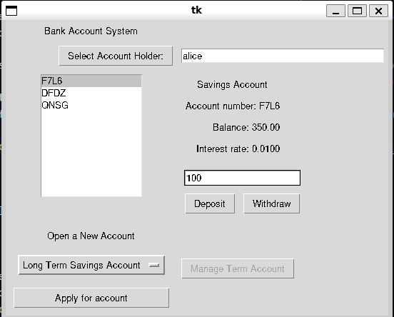
This program ends up being quite complicated but we’ll try and step through it. The first thing to do is to clean up our shell-based implementation. In the original implementation because we were keeping it lean we kept a lot of business logic in the UI class. Namely the BankAccountApplication class tracked the current interest rates, validated that a user could create an account, and applying interest. We want to factor this out.
We’ll make some quick modifications to our Account classes. Namely we’ll add a class variable, account_type which gives a string representation for a given Account subclass. We can use this a key to various dictionaries we’ll use later. We then add a dictionary which maps between the account_type string, and the actual class
account_dictionary = {
SavingsAccount.account_type: SavingsAccount,
LongTermSavingsAccount.account_type: LongTermSavingsAccount,
CreditAccount.account_type: CreditAccount,
}This helps us later when we’re dealing with multiple classes to create the corresponding GUI elements
The first step is to remove the interest calculation code. We kept this in originally so we could manually trigger it and see that it worked. Logically the interest rates code belongs in the account tracking code. What we want is the AccountSystem to update the interest on the month. However since this isn’t a live program we have to compromise. We add a .__date_last_loaded attribute which tracks the date the program was last loaded. When we reload the program we can track how many months have passed since the last time we loaded, and then apply the interest the appropriate number of times.
class AccountSystem:
"""
Represents the account management system of a bank
"""
def __init__(self):
"""
Create a new `AccountSystem` instance
"""
self.__account_dictionary = {}
self.__account_name_dictionary = {}
self.__date_last_loaded = datetime.date.today()
...
@staticmethod
def load(filename):
"""
Create an `AccountSystem` instance from a pickled binary file
Parameters
----------
filename : str
path to a file containing pickled `FashionShop` data
Returns
-------
AccountSystem
the loaded `AccountSystem` instance
Raises
------
Exceptions
raised if the file fails to load
See Also
--------
AccountSystem.save : saves an `AccountSystem` instance
"""
with open(filename, "rb") as input_file:
accounts = pickle.load(input_file)
# update the time applying interest as required
today = datetime.date.today()
last_loaded = accounts.date_last_loaded
total_month_delta = (today.year - last_loaded.year) * 12 + (
today.month - last_loaded.month
)
# apply interest while there is a difference
while total_month_delta >= 1:
accounts.apply_interest()
total_month_delta -= 1
accounts.update_date_last_loaded()
return accounts
...
@property
def date_last_loaded(self):
"""
date_last_loaded : datetime.date
The time this account system was last loaded. Used to apply interest
"""
return self.__date_last_loaded
def update_date_last_loaded(self):
"""
Updates the date the account was last loaded to the current date
Returns
-------
None
"""
self.__date_last_loaded = datetime.date.today()We keep the last date loaded as a private variable, and only let it be updated to the current date. This helps maintain the integrity of the data.
Next we want to remove the account creation business logic from the shell UI. We’ll create a new module AccountFactory this module is designed to hold functions and classes that manage the creation of accounts. This means that we can encode the business rules into these creation classes. For now we’ll make a pretty basic factory, called AccountAuthoriser. This class has some pretty basic logic that is mainly supposed to show the concept
class AccountAuthoriser:
"""
Class representing a system for authorising accounts and issuing interest rates
Attributes
----------
savings_interest : int | float
monthly interest applied to new savings accounts
credit_interest : int | float
monthly interest applied to new credit accounts
factory_map : dict[str, function]
mapping from an account type string to the respective factory function
"""
def __init__(self, account_system):
"""
Create a new `AccountAuthoriser`
Parameters
----------
account_system : AccountSystem
class that supports the Account System Data Management API
"""
self.savings_interest = 0.01
self.credit_interest = 0.10
self.__account_number_string_length = 4
self.__account_system = account_system
self.factory_map = {
Account.SavingsAccount.account_type: self.create_savings_account,
Account.LongTermSavingsAccount.account_type: self.create_long_term_savings_account,
Account.CreditAccount.account_type: self.create_credit_account,
}Let’s walk through it, the __init__ method takes in an AccountSystem. This is so the factory can interogate the state of the system for when we want to create accounts. For example we might want to calculate a credit rating based on the sum of a client’s balances and use that the define their maximum withdrawal limit for a credit account. We’ll see some of that later. Next we set the interest rates that we’ll assign to different account types, an internal variable for how long generated account numbers should be, and then provide a dictionary factory_map which allows a user to retrieve the relevant factory function for creating and Account using the account_type class attribute as a key
The next method
def calculate_long_term_interest(self, term_limit):
"""
Calculates the bonus interest assigned to a long term savings account
Parameters
----------
term_limit : int
proposed term limit in weeks
Returns
-------
float
interest rate for a long-term savings account
"""
term_contribution = (
term_limit / Account.LongTermSavingsAccount.max_term_limit * (0.1)
)
return self.savings_interest + term_contributionprovides the logic for calculating the interest rate assigned to a long term account. This is good, we’ve moved that logic out of the UI, and this means that in the future we could potentially replace this function with more sophisticated business logic
The next set of methods,
def _generate_account_number(self):
"""
Generates an account number
The generated account number is a 16 character random
alphanumeric string
Returns
-------
str
string representing a valid account number
"""
account_number_string_tuple = (
"A",
"B",
"C",
"D",
"E",
"F",
"G",
"H",
"I",
"J",
"K",
"L",
"M",
"N",
"O",
"P",
"Q",
"R",
"S",
"T",
"U",
"V",
"W",
"X",
"Y",
"Z",
"0",
"1",
"2",
"3",
"4",
"5",
"6",
"7",
"8",
"9",
) # Valid characters for an account number
account_number = "".join(
random.choices(
account_number_string_tuple, k=self.__account_number_string_length
)
)
return account_number
def create_savings_account(self, account_holder):
"""
Issue a new `SavingsAccount` to the account holder
Parameters
---------
account_holder : str
Person whose name the account will be registered in
Returns
-------
SavingsAccount
The new savings account
"""
return Account.SavingsAccount(
self._generate_account_number(), account_holder, self.savings_interest
)
def create_long_term_savings_account(self, account_holder, term_limit):
"""
Issue a new `LongTermSavingsAccount` to the account holder
Parameters
----------
account_holder : str
Person whose name the account will be registered in. That person
must hold at least one existing savings account
term_limit : int
term limit in weeks
Returns
-------
LongTermSavingsAccount
The new long term savings account
Raises
------
ValueError
Raised if the term limit is invalid
ValueError
Raised if the account holder is not eligible for a long term deposit
"""
if not Account.LongTermSavingsAccount.validate_term_limit(term_limit):
raise ValueError("Invalid term limit")
if not self._has_savings_account(account_holder):
raise ValueError("Account holder does not have an active savings account")
return Account.LongTermSavingsAccount(
self._generate_account_number(),
account_holder,
self.calculate_long_term_interest(term_limit),
term_limit,
)
def create_credit_account(self, account_holder, withdrawal_limit):
"""
Issue a new credit account to the account holder
Parameters
----------
account_holder : str
Person whose name the account will be registered in
withdrawal_limit : int | float
Maximum amount that can be withdrawn from the account
Returns
-------
CreditAccount
The new credit account
Raises
------
ValueError
Raised if the account holder is not allowed to open the credit account
"""
if not self._has_savings_account(account_holder):
raise ValueError("Account holder does not have an active savings account")
return Account.CreditAccount(
self._generate_account_number(),
account_holder,
self.credit_interest,
withdrawal_limit,
)
def _has_savings_account(self, account_holder):
"""
Check if the account holder, holds any savings accounts
Parameters
----------
account_holder : str
name of the person who holds accounts with the bank
Returns
-------
bool
`True` if the account holder has a savings account, else `False`
"""
accounts = self.__account_system.find_users_accounts(account_holder)
return any(map(lambda a: isinstance(a, Account.SavingsAccount), accounts))deal with creating new accounts. The first _generate_account_number is an internal method that generates a random string for the account number. The account number is an alphanumeric string with valid characters defined in an internal tuple. If we want to change what characters are allowed we can just change the tuple and if we want to change it’s length than we change the classes self.__account_number_string_length attribute value.
We then define functions that create the different accounts. This gives us the opportunity to enforce some business logic on the accounts. We say that there are no restrictions on opening a SavingsAccount, Someone wishing to open a LongTermSavingsAccount or CreditAccount must hold an existing savings account, and a LongTermSavingsAccount must have a valid term length.
The way these functions are written is designed to be simple, so that a different implementation of the authoriser interface might have stricter business logic. So long as the support the same public functions with the same behaviours, an end user should be able to make a drop in replacement.
We can now update the Shell program to use the AccountAuthoriser class. You should look through this code yourself. The changes are pretty simple but make the code much cleaner, and will help us in defining the graphical version because we can focus on the information flows in the system
We’ll start by adapting our selection widget to work for accounts. This is very straightforward since the widget was written quite generically. We just have to change the populate_listbox function to handle accounts and use the account_number rather than a StockItem stock_reference
class AccountSelector:
"""
Widget providing a list selection for Accounts
Parameters
-----------
receiver
A receiver object that is informed of any change in selection.
The receiver must support a method, `got_selection(str)`
frame : tkinter.Frame
The tkinter `Frame` this component is contained in
listbox : tkinter.Listbox
list box to populate with stock item references
"""
def __init__(self, root, receiver):
"""
Create a new `AccountSelector`
Parameters
----------
root
The parent frame or window to attach this component to
receiver
Object to send a message to when the selection changes.
Must support a method `got_selection(str)`
Raises
------
AttributeError
raised if `receiver` does not support `got_selection`
"""
if not hasattr(receiver, "got_selection"):
raise AttributeError(
"Supplied receiver does not support got_selection(str)"
)
self.receiver = receiver
self.frame = tkinter.Frame(root)
self.listbox = tkinter.Listbox(self.frame)
self.listbox.grid(
sticky=tkinter.E + tkinter.W + tkinter.N + tkinter.S, row=0, column=0
)
def on_select(event):
"""
Find the selected text in the Listbox and send it to the
receiving object
Bound to the `ListboxSelect` event
Parameters
----------
event
event that triggered the function
Returns
-------
None
"""
lb = event.widget
index = int(lb.curselection()[0])
receiver.got_selection(lb.get(index))
self.listbox.bind("<<ListboxSelect>>", on_select)
def populate_listbox(self, accounts):
"""
Populate the Listbox with a list of Accounts
Parameters
----------
accounts : list[Account]
a list of accounts to add to the selection
Returns
-------
None
"""
self.listbox.delete(0, tkinter.END)
for account in accounts:
self.listbox.insert(tkinter.END, account.account_number)For later, we’re also going to want to add the ability to create accounts so we want to create an menu that lets us select an account type to create. We could reuse the list box selection approach. But tkinter provides an OptionMenu widget which lets us select from a prepopulated dropdown. Since the account types are fixed at runtime we’ll use this.
class AccountTypeSelection:
"""
Class for selecting an account type
Provides a drop-down option menu for selecting an account type and
a button for confirming a choice. Will then prompt a dialog for the
user to create that account type
Attributes
----------
frame
parent widget
receiver
object to be notified when a new account is created. Must
support the `account_created(account)` method
"""
def __init__(self, root, values):
"""
Create a new `AccountTypeSelection` widget
Parameters
----------
root
parent widget
values : list[str]
values to populate the option menu with, corresponding
to `Account` class acount_type values
Raises
------
AttributeError
raised if receiver does not support the `account_created(account)` method
"""
self.frame = tkinter.Frame(root)
self._current_account_option = tkinter.StringVar(self.frame)
self._account_type_option_menu = tkinter.OptionMenu(
self.frame, self._current_account_option, *values
)
self._account_type_option_menu.grid(
sticky=tkinter.E, row=1, column=0, padx=5, pady=5
)
def get(self):
"""
Get the currently selected option
Returns
-------
str
Currently selected account option
"""
return self._current_account_option.get()This widget takes in a parent and then a list of values to populate the widget. Reading the documentation an OptionMenu takes a tkinter.StringVar. This is effectively a wrapper around a string that means it always holds the currently selected value of the OptionMenu. We then implement a get method which simply returns this current value
Now we want to create a bunch of views to display account information. This should look similar to the editor widget, but we’ll only have to deal with dynamically updated labels. The difficulty here is that different account types have different properties. We could try and create one view, and then hide the unused attributes but this isn’t very extensible. So what we’ll do is create an base class AccountView that holds all the common features, and then implement subclasses that provide a specific view for each subclass.
As an example, the base class and the LongTermSavingsAccountView are shown,
class AccountView(abc.ABC):
"""
Abstract class for providing a graphical display of an Account
Handles displaying the attributes common to all accounts. Subclasses
should extend this view with subclass specific attributes
Attributes
----------
frame
frame containing this widget
"""
def __init__(self, root):
"""
Create a new `AccountView`
Parameters
----------
root
parent widget
"""
self.frame = tkinter.Frame(root)
self._account_type_label = tkinter.Label(self.frame, text="")
self._account_type_label.grid(
sticky=tkinter.E + tkinter.W, row=0, column=0, padx=5, pady=5
)
self._account_number_label = tkinter.Label(self.frame, text="Account number:")
self._account_number_label.grid(
sticky=tkinter.E, row=1, column=0, padx=5, pady=5
)
self._balance_label = tkinter.Label(self.frame, text="Balance:")
self._balance_label.grid(sticky=tkinter.E, row=2, column=0, padx=5, pady=5)
self._interest_rate_label = tkinter.Label(self.frame, text="Interest rate:")
self._interest_rate_label.grid(
sticky=tkinter.E, row=3, column=0, padx=5, pady=5
)
@abc.abstractmethod
def clear_view(self):
"""
Clear the current view
Returns
-------
None
"""
self._account_type_label.config(text="")
self._account_number_label.config(text="Account number:")
self._balance_label.config(text="Balance:")
self._interest_rate_label.config(text="Interest rate:")
@abc.abstractmethod
def load_into_view(self, account):
"""
Load an account into the view
Parameters
----------
account : `Account.Account`
The account to display
"""
self.clear_view()
self._account_type_label.config(text="{0}".format(account.account_type))
self._account_number_label.config(
text="Account number: {0}".format(account.account_number)
)
self._balance_label.config(text="Balance: {0:.2f}".format(account.balance))
self._interest_rate_label.config(
text="Interest rate: {0:.4f}".format(account.interest_rate)
)
class LongTermSavingsAccountView(AccountView):
"""
Specific view implementation for a `LongTermSavingsAccount`
"""
def __init__(self, root):
"""
Create a new `LongTermSavingsAccountView`
Parameters
----------
root
parent widget
"""
super().__init__(root)
self._term_period_label = tkinter.Label(self.frame, text="Term period:")
self._term_period_label.grid(sticky=tkinter.E, row=4, column=0, padx=5, pady=5)
self._start_date_label = tkinter.Label(self.frame, text="Start date:")
self._start_date_label.grid(sticky=tkinter.E, row=5, column=0, padx=5, pady=5)
self._maturation_date_label = tkinter.Label(self.frame, text="Maturation date:")
self._maturation_date_label.grid(
sticky=tkinter.E, row=6, column=0, padx=5, pady=5
)
def clear_view(self):
super().clear_view()
self._term_period_label.config(text="Term period:")
self._start_date_label.config(text="Start date:")
self._maturation_date_label.config(text="Maturation date:")
def load_into_view(self, account):
super().load_into_view(account)
self._term_period_label.config(
text="Term Period: {0} weeks".format(account.term_period)
)
self._start_date_label.config(text="Start date: {0}".format(account.start_date))
self._maturation_date_label.config(
text="Maturation date: {0}".format(account.maturation_date)
)As you can see similar to the stock item editor, we load an Account in for display, and we can clear the display. We don’t use this screen for editing or modifying accounts so that functionality is removed. You can see the full set of views (including a dictionary which maps between the account account_type strings and the corresponding view in the AccountView.py file)
At this point we almost have the barebones of a program. We can implement a simple Entry widget and a button that lets the user select an account holder. We can then populate selection list with that name’s accounts, and the user can then select and display them. This is the basic framework for the graphical version of the BankAccountApplication class
class BankAccountApplication:
"""
Provides a graphical interface for a Bank Account System
"""
def __init__(self, filename, storage_class):
"""
Create a new `BanAccountApplication`
Parameters
----------
filename : str
file to save the system in, the program will try to load
from the file
storage_class : AccountSystem
class to use for the underlying data storage. The data will
first attempt to be loaded, otherwise a new instance is
created
"""
BankAccountApplication.__filename = filename
self._program_title = "Bank Account System"
try:
self.__account_system = storage_class.load(filename)
except: # noqa: E722
tkinter.messagebox.showwarning(
title=self._program_title,
message="Failed to load Accounts\nCreating a new database",
)
self.__account_system = storage_class()
self.__authoriser = AccountFactory.AccountAuthoriser(
self.__account_system
) # validates and creates new accounts
self._username = "" # no user to start
self._selected_account = None # no account to start
self._setup_UI()
def _setup_UI(self):
"""
Configure and setup the user interface
Returns
-------
None
"""
# set up program title
self._root = tkinter.Tk()
title_label = tkinter.Label(self._root, text=self._program_title)
title_label.grid(sticky=tkinter.E + tkinter.W, row=0, column=0, padx=5, pady=5)
# configure the widgets
self._setup_views()
self._setup_selector()
self._setup_balance_editor()
self._setup_account_creation()
# configure the button to launch long-term account management
def launch_manage_long_term_view():
"""
Binding function that launches the manage long term account
window for the currently selected long term account
Returns
-------
None
"""
...
def _setup_views(self):
"""
Setup and configure the Account Display section of the program
Returns
-------
None
"""
# store the possible views
# set default to a blank savings account
self._views = AccountView.account_views_dictionary
self._view = self._views[Account.SavingsAccount.account_type](self._root)
self._view.frame.grid(
sticky=tkinter.E + tkinter.W, row=2, column=1, columnspan=2, padx=5, pady=5
)
def _setup_selector(self):
"""
Setup the Account Selection Listbox and the User Entry
Returns
-------
None
"""
# setup the selection widget
self._selector = AccountSelector.AccountSelector(self._root, self)
self._selector.frame.grid(
sticky=tkinter.N + tkinter.S, row=2, column=0, rowspan=2, padx=5, pady=5
)
# populate the initial list of accounts
self._filter_user_accounts()
# add the entry box for the username
self._username_entry = tkinter.Entry(self._root, width=40)
self._username_entry.grid(
sticky=tkinter.E + tkinter.W, row=1, column=1, padx=5, pady=5
)
def update_username():
"""
Binding function handling when the username is changed
This function has to update the current username and then,
1. Set the list of viewable accounts
2. clear the currently selected account and view
Returns
-------
None
"""
self._username = self._username_entry.get()
self._filter_user_accounts()
self._selected_account = None
self._view.clear_view()
user_button = tkinter.Button(
self._root, text="Select Account Holder:", command=update_username
)
user_button.grid(sticky=tkinter.E, row=1, column=0, padx=5, pady=5)
def _filter_user_accounts(self):
"""
Populate the account selection list with the accounts associated
with the current user
Returns
-------
None
"""
self._selector.populate_listbox(
self.__account_system.find_users_accounts(self._username)
)I’ve trimmed some of the setup_UI function for now. We can see that we setup our widgets, and button so that when the user enters a name, it is set as the username and we load their accounts. Now we need to handle what happens when the user actually clicks on an account. This is done by implementing the got_selection method.
def got_selection(self, selection):
"""
Handles the selection in the account list changing
This method removes the old account view, and then installs the
new one loading the selected account. If the account is a matured
long term account the button to manage a long term account is activated,
else it is disabled.
Parameters
----------
selection : str
account number of the selected account
Returns
-------
None
Raises
------
TypeError
Raised if there is matching View for the returned account
"""
# clear the current view and construct the relevant new one
self._view.frame.grid_forget() # delete the existing view
self._selected_account = self.__account_system.get_account(selection)
try:
self._view = self._views[self._selected_account.account_type](self._root)
if (
self._selected_account.account_type
== Account.LongTermSavingsAccount.account_type
and self._selected_account.has_matured()
):
# activate the manage long term button if a long term
# account is selected and has matured
self._manage_long_term_button.config(state=tkinter.NORMAL)
else:
# keep it disabled
self._manage_long_term_button.config(state=tkinter.DISABLED)
except KeyError:
raise TypeError(
"Selection {0} has no corresponding AccountView".format(
self._selected_account.account_type
)
)
self._view.frame.grid(
sticky=tkinter.E + tkinter.W, row=2, column=1, padx=5, pady=5
)
# ensure that all subcomponents have the correct selected account
self._view.load_into_view(self._selected_account)
self._balance_editor.account = self._selected_accountThis function is a little complicated. First it removes the current AccountView. It then gets the newly selected account and uses it’s account_type to load the correct AccountView class. We then create that new view, install it into the interface and load the account into it. Later we’ll see that we have a button that handles managing a matured long term savings account. This function also checks if we’ve selected such an account and if so enables the appropriate button to access that menu. The last thing we do is ensure that the self._balance_editor component has the correct account set. Let’s look at that component now.
This is a simple component consisting of an Entry box, and two buttons, one to withdraw money and one to deposit it. This widget needs to know the current account so that it can ensure that the amount entered into the Entry box is valid when we try to withdraw or deposit.
class AccountBalanceEditor:
"""
Class representing a graphical account balance editor
Attributes
----------
receiver
object to notify when an account balance in modified.
Must support the `balance_changed()` method
frame
the widget frame containing the component
"""
def __init__(self, root, receiver):
"""
Create a new `AccountBalanceEditor`
Parameters
----------
root :
parent widget
receiver :
object supporting the `balance_changed` method to be notified
when a balance changes
Raises
------
AttributeError
raised if receiver does not support `balance_changed`
"""
if not hasattr(receiver, "balance_changed"):
raise AttributeError(
"Supplied receiver does not support balance_changed method"
)
self.receiver = receiver
self._current_account = None
self.frame = tkinter.Frame(root)
self._change_balance_entry = tkinter.Entry(self.frame, width=10)
self._change_balance_entry.grid(
sticky=tkinter.E + tkinter.W, row=0, column=0, columnspan=2, padx=5, pady=5
)
def modify_balance(fn, error_title="Balance Modification Failed"):
"""
binding function for modifying a balance by a provided function `fn`
Takes an input function `fn` to control how the balance is modified,
but handles validating the state and cleaning up the GUI
Parameters
----------
fn : function
function to call to modify the balance
error_title : str, optional
string to use to title the message box
if any errors are reported, by default "Balance Modification Failed"
Returns
-------
None
Notes
-----
Errors will result in a message box being displayed to the user
"""
try:
fn(float(self._change_balance_entry.get()))
self.receiver.balance_changed()
self._change_balance_entry.delete(0, tkinter.END)
except ValueError as e:
tkinter.messagebox.showerror(title=error_title, message=str(e))
def deposit():
"""
Provides a binding to the deposit method on the current account
Returns
-------
None
"""
modify_balance(self._current_account.deposit, error_title="Deposit failed") # type: ignore
def withdraw():
"""
Provides a binding to the withdraw method on the current account
Returns
-------
None
"""
modify_balance(
self._current_account.withdraw, # type: ignore
error_title="Withdraw failed",
)
self._deposit_button = tkinter.Button(
self.frame, text="Deposit", command=deposit
)
self._deposit_button.grid(sticky=tkinter.W, row=1, column=0, padx=5, pady=5)
self._deposit_button.config(state=tkinter.DISABLED)
self._withdraw_button = tkinter.Button(
self.frame, text="Withdraw", command=withdraw
)
self._withdraw_button.grid(sticky=tkinter.E, row=1, column=1, padx=5, pady=5)
self._withdraw_button.config(state=tkinter.DISABLED)
@property
def account(self):
"""
account : Account
the account being edited
Raises
------
TypeError
raised when attempting to set `account` to a type that is not a subclass of `Account.Account`
"""
return self._current_account
@account.setter
def account(self, account):
if not isinstance(account, Account.Account) and account is not None:
raise TypeError("account must be a subclass of Account or None")
self._current_account = account
if self._current_account is None:
self._withdraw_button.config(state=tkinter.DISABLED)
self._deposit_button.config(state=tkinter.DISABLED)
else:
self._withdraw_button.config(state=tkinter.NORMAL)
self._deposit_button.config(state=tkinter.NORMAL)Otherwise it’s pretty simple. It deactivates the buttons whenever there is no account selected, otherwise when the user clicks the buttons it will attempt to modify the account balance. Any exceptions are caught and reported to the user, otherwise if it succeeds it emits a balance_changed message that our program can use to update the view with the new balance. Let’s look at how this is implemented in the BankAccountApplication
def _setup_balance_editor(self):
"""
Setup and configure the component for withdrawing and depositing into accounts
Returns
-------
None
"""
self._balance_editor = AccountBalanceEditor.AccountBalanceEditor(
self._root, self
)
self._balance_editor.frame.grid(
sticky=tkinter.E + tkinter.W, row=3, column=1, padx=5, pady=5
)
self._balance_editor.account = self._selected_account_setup_balance_editor sets up the widget in the program, and makes sure the intial state is valid.
def balance_changed(self):
"""
Handles the selected account balance changing
Reloads the view to update the displayed balance
Returns
-------
None
"""
self._view.load_into_view(self._selected_account)balance_changed then reloads the view. Note we don’t have to do the full view reconstruction because we know that the account type hasn’t changed
The next step to implement is probably the most complicated and that is account creation. The basic idea is as follows. The user should select an account type from a drop down menu, then click a button to apply for that account. A new dialog pops up asking them to confirm that they want to open the account, and requesting any additional information. If the account is successfully created the user is informed and the dialog closes, otherwise the error is also reported and they can potentially correct it.
Let’s look at how we’ll handle the creation window. Each different account type has different requirements. For example a savings account has no additional information required, and no restrictions but a term deposit must ask for a term length and then validate that the term length is valid and the user is eligable to hold that account. So the basic idea is to create a basic ApplicationForm widget, that provides a generic interface for different accounts to implement. The basic interface looks as follows,
class ApplicationForm(abc.ABC):
"""
Abstract class representing an account application form
This class should be overwritten with the required fields to get
the information required from the user to apply for an account.
The information should be accessed via the `get` method which should
be overwritten by a class
Attributes
----------
frame
frame containing the elements of the widget
"""
def __init__(self, root):
"""
create a new `ApplicationForm`
This is an abstract class and the constructor should not be
called directly
Parameters
----------
root
parent widget
"""
self.frame = tkinter.Frame(root)
@abc.abstractmethod
def get(self):
"""
Return the details of an account application
The details should be returned in the format of a dictionary
containing key : value pairs where the key's are strings describing
required attributes and the values are the associated values
Returns
-------
dict[str, Any]
key : value pairs describing an account application
"""
return {}The idea is simple. The __init__ creates whatever widgets are needed to get information from the user, and get returns that as a dictionary where the keys are the parameters to the relevant account factory function in AccountAuthoriser and the value is the argument. You can see the three implementations in AccountCreation.py, but we’ll look at the CreditAccountApplicationForm
class CreditAccountApplicationForm(ApplicationForm):
"""
Represents a graphical application form for a credit account
"""
def __init__(self, root):
"""
Create a new `CreditAccountApplicationForm`
Parameters
----------
root
parent widget
"""
super().__init__(root)
self._withdrawal_limit_entry = tkinter.Entry(self.frame, width=10)
withdrawal_limit_label = tkinter.Label(
self.frame, text="Enter Withdrawal limit:"
)
withdrawal_limit_label.grid(sticky=tkinter.E, row=0, column=0, padx=5, pady=5)
self._withdrawal_limit_entry.grid(
sticky=tkinter.E, row=0, column=1, padx=5, pady=5
)
def get(self):
"""
Return the details for a credit account
Returns
-------
dict[str, int]
dictionary containing the max withdrawal limit keyed by "withdrawal_limit"
"""
return {"withdrawal_limit": int(self._withdrawal_limit_entry.get())}You can see that this creates a widget with an Entry to get the maximum withdrawal limit, which is then returned in the get dictionary. As before we provide a dictionary that let’s user select the appropriate application form given an account_type string.
account_creation_dictionary = {
Account.SavingsAccount.account_type: SavingsAccountApplicationForm,
Account.LongTermSavingsAccount.account_type: LongTermSavingsAccountApplicationForm,
Account.CreditAccount.account_type: CreditAccountApplicationForm,
}
"""
Dictionary mapping `Account.account_type` values to the respective application form class
"""We now have these widgets, but what we want to do is to embed them in a window. We’ll do this in a two step process. We’re going to do a bit of dependency injection magic. When we create an account we want to do the same general thing. Display the relevant widget, then have the user enter that information into the widget. They’ll then click the button which should dispatch the information to the relevant function to create an account. We ensure that the account is created successfully and inform the user, if it isn’t we inform the user of the error. This basic logic is the same but we have an issue, the widget is different for each class, and the required constructor is different for each. We want to avoid redoing all the presentation logic that just displays the widget and informs the user about the attempt to create an account. So we’ll create a higher level widget AccountCreationWidget
class AccountCreationWidget:
"""
Provides a basic widget for Account Creation
This widget is designed to by contained in a separate dialog window. It displays
a button for creating account, and logic for creating the account on click.
The widget uses dependency injection and has a specific workflow,
1. Create the AccountCreationWidget assigning its `root` as the dialog
and a `receiver` to accept the `account_created(account)` message
2. Create a widget to display to the user, to accept any required information.
This widget should have the `AccountCreationWidget` as the parent, and be
placed into the frame of the widget at `row=0, column=0` on the grid
3. Define a function, that takes no arguments and creates an account. This function
must use `ValueError` to indicate any failure conditions. The design intent
is that this accesses any required input from the widget supplied in step 2
4. Register the function by calling `register_account_creation_factory` and
passing the function
5. Accounts will now be created when the button is clicked, the call to
`create_account` will defer to the registered function for account creation
This allows the same generic window and user input validation logic to be
used to display different account application forms. See the `ApplicationForm`
class for an example widget designed to work with this class
Attributes
----------
frame
the frame containing this component. The user should hook a widget onto
this frame using the grid position `row=0, column=0`
receiver
object to receive the `account_created(account)` message
"""
def __init__(self, root, receiver):
"""
Create a new `AccountCreationWidget`
Parameters
----------
root
parent widget
receiver
object to receive the `account_created(account)` message
"""
if not hasattr(receiver, "account_created"):
raise AttributeError(
"receiver does not support the account_created(account) method"
)
self.frame = tkinter.Frame(root)
self.receiver = receiver
self._root = root
self._factory_fn = None
dialog_button = tkinter.Button(
self.frame, text="Create account", command=self.create_account
)
dialog_button.grid(
sticky=tkinter.E + tkinter.W, row=1, column=0, padx=5, pady=5
)
def register_account_creation_factory(self, account_creation_factory):
"""
Register a function for `Account` creation
The function should take no arguments and return an `Account` object
when called, else raise `ValueError` if an object cannot be created
Parameters
----------
account_creation_factory : callable[None,Account.Account]
factory function to create accounts. Must take no arguments and
return an `Account` subclass on call. May raise `ValueError` to
indicate failures
Returns
-------
None
"""
self._factory_fn = account_creation_factory
def create_account(self):
"""
Create a new account
Defers to the registered factory function to create the account.
Inform the user of the result and close the dialog box on success
Returns
-------
None
"""
try:
if self._factory_fn is None:
raise TypeError(
"AccountCreationWidget has no registered factory, did you forget to call register_account_creation_factory?"
)
account = self._factory_fn()
tkinter.messagebox.showinfo(
title="{0} created".format(account.account_type),
message="Created a new {0}\n{1} - {2}".format(
account.account_type, account.account_holder, account.account_number
),
)
self.receiver.account_created(account)
self._root.grab_release()
self._root.destroy()
except ValueError as e:
tkinter.messagebox.showinfo(
title="Account creation failed",
message="Failed to create an account\n:{0}".format(e),
)This code probably takes a bit to understand, but the idea is as follows, we create the widget that contains the button for creating an account. We leave the grid location row=0, column=0 empty. The person who instantiates this object should then embed the appropriate application form into that grid location by making the AccountCreationWidget’s frame the parent. The user then registers a function via register_account_creation_function. This function formally just takes no arguments and returns an account (or raises a ValueError if creating the account fails)
The logic is as follows. We have to create parents before children, so we can’t pass the child widget in, so we leave the frame public and create it after. The factory function is expected to read the information it needs from the application form to create an Account so it also can’t be passed in at initialisation. So we create the AccountCreationWidget, then create our ApplicationForm and display it on the AccountCreationWidget. We then define and pass our factory function. The AccountCreationWidget then handles all the display logic around creating an acccount by defers to the registered function to actually do it. A client can respond to an account being created by being registered as the receiver object in which case it must provide a account_created(account) method which enables it to receive the new account.
Let’s look at it in the BankAccountApplication
def _setup_account_creation(self):
"""
Setup and configure the component for creating new accounts
Returns
-------
None
"""
creation_frame = tkinter.Frame(self._root)
# create account label and the account selection option menu
create_account_label = tkinter.Label(creation_frame, text="Open a New Account")
create_account_label.grid(
sticky=tkinter.E + tkinter.W, row=0, column=0, columnspan=2, padx=5, pady=5
)
account_creator = AccountSelector.AccountTypeSelection(
creation_frame, Account.account_dictionary.keys()
)
account_creator.frame.grid(
sticky=tkinter.E + tkinter.W, row=1, column=0, padx=5, pady=5
)
creation_frame.grid(sticky=tkinter.E, row=4, column=0, padx=5, pady=5)The setup so far is pretty simple, we just add the label and the AccountTypeSelection widget discussed earlier. Now we need to setup our button for creating a new account. This needs to create the new window, create the application form and define the appropriate function. This is implemented in the applied_for_account function in the _setup_account_creation function
def applied_for_account():
"""
binding function that takes the current selected account type
and creates the appropriate window for creating a new account
Returns
-------
None
"""
if self._username == "":
tkinter.messagebox.showerror(
message="Could not create account\nNo account holder selected"
)
return
try:
account_type = account_creator.get()
# set up the window to display the application form
dlg = tkinter.Toplevel(self._root)
dialog_widget = AccountCreation.AccountCreationWidget(dlg, self)
# create the application form and add it to the window
application_form = AccountCreation.account_creation_dictionary[
account_type
](dialog_widget.frame)
application_form.frame.grid(
sticky=tkinter.E + tkinter.W, row=0, column=0, padx=5, pady=5
)
def factory_fn():
"""
Factory function for creating a new account
Get's the appropriate factory method from the authoriser
and links to the application form widget to receive any
additional input
Implicitly assumes that the returned dictionary keys
correspond to the function arguments so that they can be
expanded out with `**`
Returns
-------
Account.Account
A new account object
"""
return self.__authoriser.factory_map[account_type](
self._username, **application_form.get()
)
dialog_widget.register_account_creation_factory(factory_fn)
dialog_widget.frame.grid()
dlg.transient(self._root)
dlg.wait_visibility()
dlg.grab_set()
dlg.wait_window()
except KeyError as e:
tkinter.messagebox.showerror(
message="Could not create account:\n{0}".format(e)
)
new_account_button = tkinter.Button(
creation_frame, text="Apply for account", command=applied_for_account
)
new_account_button.grid(
sticky=tkinter.E + tkinter.W, row=2, column=0, padx=5, pady=5
)First is the account holder isn’t specified we throw an error and stop. Otherwise we get the account type, we then create the new window and the AccountCreationDialog. We then use the account type to get and create the application form and place it in the window. We then define our factory function. We use the factory_map attribute on the AccountAuthoriser to access the appropriate construction method, then get the required arguments from the widget. This looks like,
def factory_fn():
"""
Factory function for creating a new account
Get's the appropriate factory method from the authoriser
and links to the application form widget to receive any
additional input
Implicitly assumes that the returned dictionary keys
correspond to the function arguments so that they can be
expanded out with `**`
Returns
-------
Account.Account
A new account object
"""
return self.__authoriser.factory_map[account_type](
self._username, **application_form.get()
)Which is pretty clean once you understand the logic. The **application_form.get() converts the dictionary into additional keyword arguments. For example, when used to create a CreditAccount this function call is effectively,
return self.__authoriser.create_credit_account(self.__username, withdrawal_limit=value)where value is whatever number we’ve extracted from the application form. The remaining code then connects this function to the widget and handles opening the widget. We then have to implement the account_created(account) function,
def account_created(self, account):
"""
Handles a new account being created
Stores the new account in the storage class and reloads the
list of accounts
Parameters
----------
account : Account.Account
newly created account
Returns
-------
None
"""
self.__account_system.add_new_account(account)
self._filter_user_accounts()This just adds the new account to the system and then updates the displayed list of accounts
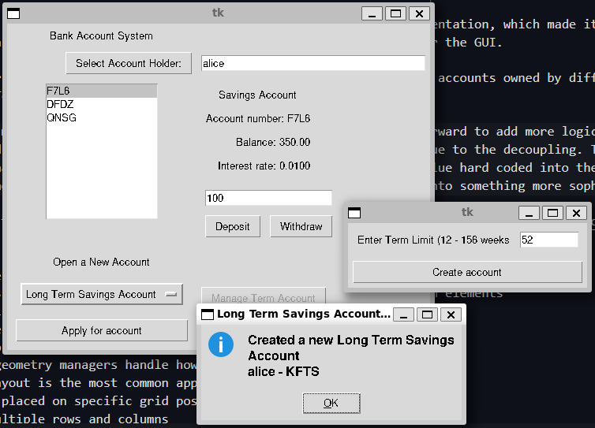
The last widget we want to have is a basic window for managing a matured long term savings account. We’ve already seen that there’s a button that opens this window, but we’ll show that code now (contained with the _setup_UI method),
def launch_manage_long_term_view():
"""
Binding function that launches the manage long term account
window for the currently selected long term account
Returns
-------
None
"""
if self._selected_account is None:
tkinter.messagebox.showerror(message="No account selected")
return
dlg = tkinter.Toplevel(self._root)
manage_view = ManageLongTermAccountView.ManageLongTermAccountView(
dlg, self._selected_account, self.__account_system
)
manage_view.frame.grid()
other_accounts = set(
self.__account_system.find_users_accounts(self._username)
).difference({self._selected_account})
manage_view.populate_listbox(other_accounts)
dlg.transient(self._root)
dlg.wait_visibility()
dlg.grab_set()
dlg.wait_window()
self._manage_long_term_button = tkinter.Button(
self._root, text="Manage Term Account", command=launch_manage_long_term_view
)
self._manage_long_term_button.grid(
sticky=tkinter.W, row=4, column=1, padx=5, pady=5
)
self._manage_long_term_button.config(state=tkinter.DISABLED)You can see that launch_manage_long_term_view first checks that we have an account selected, then creates the dialog, including a ManageLongTermAccountView widget we’ll look at. We can see this widget takes the currently selected account and the account system. We then get the set of accounts associated with the current user that are not the currently selected account and use these to populate the selection list of the ManageLongTermAccountView.
Let’s now look at that widget,
class ManageLongTermAccountView:
"""
Graphical widget for managing a long term account
Provides the user with a list to select their other accounts. The user
can then either reinvest the matured account or transfer the savings in
the account into another account
Attributes
----------
frame
the frame holding the graphical component
"""
def __init__(self, root, account, account_system):
"""
Create a new `ManageLongTermAccountView`
Parameters
----------
root
parent widget
account : Account.LongTermSavingsAccount
The long term account being managed
account_system : AccountSystem.AccountSystem
The account system storing the system accounts
"""
self._root = root
self.__account_system = account_system
self.__selected_transfer_account = None # no transfer account to start
self.__account = account
self.frame = tkinter.Frame(root)
# create the views for the long term account, the prospective
# transfer account and the list to select other accounts
# load the managed account into the view
self._selector = AccountSelector.AccountSelector(self.frame, self)
self._lt_view = AccountView.LongTermSavingsAccountView(self.frame)
self._lt_view.load_into_view(self.__account)
self._other_views = AccountView.account_views_dictionary
self._other_view = self._other_views[Account.SavingsAccount.account_type](
self.frame
)
self._lt_view_label = tkinter.Label(self.frame, text="Matured Account")
self._other_view_label = tkinter.Label(self.frame, text="Transfer Account")
self._selector_label = tkinter.Label(self.frame, text="Select Transfer Account")
self._lt_view.frame.grid(
sticky=tkinter.W + tkinter.N, row=1, column=0, padx=5, pady=5
)
self._other_view.frame.grid(
sticky=tkinter.E + tkinter.N, row=1, column=1, padx=5, pady=5
)
self._selector.frame.grid(
sticky=tkinter.E + tkinter.N, row=1, column=2, padx=5, pady=5
)
self._lt_view_label.grid(sticky=tkinter.W, row=0, column=0, padx=5, pady=5)
self._other_view_label.grid(sticky=tkinter.E, row=0, column=1, padx=5, pady=5)
self._selector_label.grid(sticky=tkinter.E, row=0, column=2, padx=5, pady=5)
def dismiss():
"""
binding to dismiss the parent window when the account is no longer being managed
Returns
-------
None
"""
self._root.grab_release()
self._root.destroy()
def reinvest():
"""
binding to reinvest an account
Returns
-------
None
"""
self.__account.manage_account()
tkinter.messagebox.showinfo(message="Reinvested account")
dismiss()
def transfer():
"""
binding to transfer funds to another account
Requires a selected transfer account. If one is selected will
attempt to transfer the funds into that account
Returns
-------
None
"""
try:
if self.__selected_transfer_account is None:
raise ValueError("No transfer account selected")
self.__account.manage_account(self.__selected_transfer_account)
tkinter.messagebox.showinfo(
message="Transferred funds from {0} to {1}".format(
self.__account.account_number,
self.__selected_transfer_account.account_number,
)
)
except ValueError as e:
tkinter.messagebox.showerror(
message="Failed to transfer account:\n{0}".format(e)
)
return
dismiss()
button_frame = tkinter.Frame(self.frame)
reinvest_button = tkinter.Button(
button_frame, text="Reinvest", command=reinvest
)
reinvest_button.grid(sticky=tkinter.W, row=0, column=0, padx=5, pady=5)
self._transfer_button = tkinter.Button(
button_frame, text="Transfer", command=transfer
)
self._transfer_button.grid(sticky=tkinter.W, row=0, column=1, padx=5, pady=5)
button_frame.grid(sticky=tkinter.E + tkinter.W, row=2, column=2, padx=5, pady=5)
def got_selection(self, selection):
"""
Handles the current selection being changed
Loads the newly selected transfer account into the view and
ensures the transfer button is enabled
Parameters
----------
selection : str
account number for the selected transfer account
Returns
-------
None
"""
self._transfer_button.config(state=tkinter.NORMAL)
self._other_view.frame.grid_forget() # delete the existing view
self.__selected_transfer_account = self.__account_system.get_account(selection)
try:
self._other_view = self._other_views[
self.__selected_transfer_account.account_type
](self.frame)
except KeyError:
raise TypeError(
"selection {0} has no corresponding AccountView".format(
self.__selected_transfer_account.account_type
)
)
self._other_view.load_into_view(self.__selected_transfer_account)
self._other_view.frame.grid(
sticky=tkinter.E + tkinter.N, row=1, column=1, padx=5, pady=5
)
def populate_listbox(self, accounts):
"""
Populate the selection list with the given accounts
Attributes
----------
accounts : list[Account.Account]
list of accounts to populate the list with
Returns
-------
None
"""
self._selector.populate_listbox(list(accounts))It should be pretty similar to our main window. What it does is create a window where we can see how currently selected long term account using a LongTermSavingsAccountView, then next to it the optionally selected account that we might transfer into to is also displayed. Finally the rightmost column contains a selection list that we can use to select which account we want to transfer into. There are two buttons, reinvest which simply reinvests the account, and transfer which will attempt to transfer the account.
The program that actually runs the code is BankAccountGUI.py. It has basically no changes compared to the shell version which is what we want. Like with the final graphical fashion shop, we can use a shell interface or a graphical interface to the same underlying data model
Design Considerations
Now that we’re finished it’s worth again looking at the final design. I’m fairly happy with the final result in that the coupling feels quite low. This can be seen with the LongTermSavingsAccountView which is able to easily reuse the AccountSelector and AccountView components made for the main window. In my initial design the components for account creation were quite tightly coupled, but this final version seems pretty simple to me and concentrates most of the decision logic in the main program, the graphical components for the most part only handle graphical events.
Our changes with the AccountSystem have also decoupled business logic and presentation, which made it easy to keep the shell version compatible even when we made small A.P.I changes to support the factory approach we used for the GUI.
Future directions for this might be to add the ability to transfer money between accounts owned by different people. We could probably modify a version of the LongTermSavingsAccountView to do this pretty easily.
In terms of the data model, at this point it would probably be pretty straightforward to add more logic to how accounts are made such as loyalty tiers for credit cards that impact withdrawal limit within mininal GUI changes due to the decoupling. The main issue with the model though is that we still have accounts having interest rates fixed when they’re created, and the value hard coded into the authorisation class. This is fine for a toy model but probably the next step if we were to continue expanding this project into something more sophisticated
I’ve alsoed included the [pydoc documentation] which you may like to explore, (not all the links will work)
Summary
- Graphical user interfaces are an alternative presentation style to a shell-based one
- Typically they consist of multiple interacting components that represent screen elements
- e.g. text labels
- text entry boxes
- buttons to be pressed
- Screen display or geometry managers handle how components are displayed on a screen
- Typically a grid layout is the most common approach to laying out an interface
- Objects can be placed on specific grid positions,
- Made to span multiple rows and columns
- Stickied to certain axes to fill them
- Objects on the screen can generate events
- Events are mapped onto calls to a python function (or class method)
- E.g. Button’s typically execute a command when they’re clicked
- Programs can bind events generated by other methods
- e.g. mouse movements or clicks
- keyboard presses or releases
Questions and Answers
Is
tkinterthe only way to create Graphical User Interfaces in python?- No, but it does come bundled with the standard library
- Generally easy to get started with
- Some other examples are
- Kivy
- PyQt or the offical Pyside
- Dear PyGUI
- Diffrent graphical user interface frameworks have different design philosophies but the general concepts should carry over
- No, but it does come bundled with the standard library
Are programs with a graphical user interface easier to create than those that use a command shell?
- It probably depends on the individual and their interest
- I personally enjoy writing small command line based programs more so find the quicker to write
- Graphical user interfaces can typically control user errors easier because they have more control over what the user can do
- However positioning, wiring and ensuring logic flow through the program can be more complicated and lead to more bugs
- They can also be harder to write in a way that is flexible, generic and extensible
Is a program with a GUI still a “data processing” program?
- Depends how you like to think about it
- Rather than being a single pipeline of data in and then data out we have a series of events
- Each event can be thought of as a little bit of data in (the event) and then data out (the handling of the event)
- You can consider a GUI as a series of interacting mini-programs
- When creating software components and GUIs you typically have to organise as much as you code
- You need to ensure that messages from one source get to another
- We also want to seperate different UI components that are distinct from each
- Then also want to seperate the presentation UI elements from the data elements themselves
- We’ve seen the advantage of this in the fashion shop and bank account programs
- But we’ve also seen that it can take a few iterations and add complexity to make it work